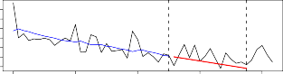
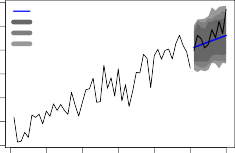
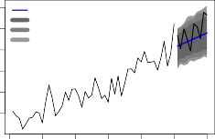

Universidade Federal de São Carlos
Centro de Ciências Exatas e de Tecnologia Departamento de Estatística
Time series forecasting: advances on Theta method
José Augusto Fiorucci
Maio/2016
José Augusto Fiorucci
Time series forecasting: advances on Theta method
Tese apresentada ao Programa de Pós-Graduação em Estatística da Universidade Federal de São Carlos
- PPGEs/UFSCar, como parte dos requisitos para obtenção do título de Doutor em Estatística.
Orientador: Prof. Dr. Francisco Louzada Neto
São Carlos - SP Maio/2016
Ficha catalográfica elaborada pelo DePT da Biblioteca Comunitária UFSCar Processamento Técnico
com os dados fornecidos pelo(a) autor(a)
Fiorucci, José Augusto
F521t Time series forecasting : advances on Theta method / José Augusto Fiorucci. -- São Carlos : UFSCar, 2016.
87 p.
Tese (Doutorado) -- Universidade Federal de São Carlos, 2016.
1. Previsão. 2. Séries temporais. 3. Método Theta. 4. M3-Competition. 5. Revisão sistemática. I. Título.
UNIVERSIDADE FEDERAL DE SÃO CARLOS
Centro de Ciências Exatas e de Tecnologia Programa de Pós-Graduação em Estatística
Folha de Aprovação
Assinaturas dos membros da comissão examina José Augusto Fiorucci, realizada em 13/05/2016:
provou a Defesa de Tese de Doutorado do candidato
Prof. Dr. Adriano Kamimura Suzuki
rtv--:.,
USP
L" -
SRe)s de Andrade Filho
Pro f. Dr. Luis Aparecido Milan UFSCar
Agradecimentos
Agradeço primeiramente a Deus por me permitir estudar e desenvolver pesquisas. Agradeço a toda minha família pelo apoio e incentivo, em especial aos meus pais,
José Airton Fiorucci e Luzia Neuza Dalaqua, com os quais eu sempre estarei em divida.
Agradeço ao meu orientador, Francisco Louzada Neto, por todo ensinamento, amizade e paciência durante esses anos.
Agradeço ao meu supervisor no exterior, Dipak Dey, o qual tornou possível o meu estágio nos Estados Unidos.
Agradeço aos muitos amigos pelos momentos de descontração e apoio. Em especial a Yiqi Bao, por todo convívio e colaboração durante esses anos.
Aos professores Ricardos Sandes Ehlers e Liane Werner, membros da banca de qualificação, pelas valiosas sugestões feitas.
Aos professores Adriano Kamimura Suzuki, Luis Aparecido Milan, Marinho Gomes de Andrade Filho e Rodrigo Fernandes de Mello, membros da banca de defesa, por todas correções e suggestões para trabalhos futuros.
Essa tese contou com a colaboração de varias pessoas com as quais sou extremamente grato. Em especial destaco meus coautores: Tiago Pellegrini, por ter me introduzido a trabalhar com o método theta e ter compartilhado varias ideias; Fotios Petropoulos, por todo acompanhamento e colaborações, as quais foram fundamentais para obtenção dos resultados aqui apresentados; Anne B. Koehler, por todas as correções, ideias e refinamentos.
Aos professores e aos demais funcionários do departamento de estatística da UFSCAR e da UCONN por todo ensinamento e excelente convívio.
Por fim, agradeço a Fundação CAPES do Ministério da Educação do Brasil, por todo suporte financeiro.
Acknowledgments
I thank God for enabling me to study and develop this research.
I thank my family for their support and encouragement, especially, my parents, José Airton Fiorucci and Luzia Neuza Dalaqua, to whom I will always be indebted.
I thank my supervisor, Francisco Louzada Neto, for his teaching, counsel, friendship and patience.
I thank my external supervisor, Dipak Dey, who made my internship in the United States of America possible.
I thank my friends for shared moments and encouragement, in particular, Yiqi Bao, for her conviviality and cooperation.
I thank the Professors Ricardo Sandes Ehlers and Liane Werner, the members of my qualifying exam, for their invaluable recommendations.
I thank the Professors Adriano Kamimura Suzuki, Luis Aparecido Milan, Marinho Gomes de Andrade Filho and Rodrigo Fernandes de Mello, the member of my defense exam, for all corrections and suggestions for future works.
This PhD thesis was developed with the collaboration of several colleagues, to whom I am most grateful, above all, my coauthors: Tiago Pellegrini, who introduced me to Theta methods and shared several ideas; Fotios Petropoulos, whose contributions were critical to obtaining the results reported herein; Anne B. Koehler, for all corrections, ideas and improvements.
I wish to express my gratitude to the professors and other staffs in the department of statistics at UFSCAR and UCONN for their teaching and congeniality.
In closing, I convey my appreciation to the CAPES foundation of Brazil’s Education Ministry for the support which sustained my research.
Métodos precisos e robustos para prever séries temporais são muito importantes em diversas áreas. Uma vez que os dados históricos são utilizados para o planejamento estratégico de operações futuras, como compra ou venda de determinados produtos para controle de estoque e demanda.
Neste contexto, várias competições para métodos de previsão de séries temporais univariadas foram realizadas, sendo a Competição M3 a maior. Ao vencer a Competição M3, o método Theta intrigou pesquisadores por sua capacidade preditiva e simplicidade. O método Theta é uma combinação de outros métodos, o qual propõe decompor a série temporal (desazonalizada) em outras duas séries temporais chamadas de "linhas thetas". A primeira linha theta remove completamente a curvatura dos dados, sendo assim um estimador para a tendência a longo prazo. A segunda linha theta dobra a curvatura da série sendo assim um estimador para a componente de curto prazo.
Várias questões relacionadas ao método Theta foram levantadas, algumas pelos próprios autores, como parâmetros ideais para as linhas thetas, pesos para combinar as linhas thetas, construção de intervalos de predição, número ideal de linhas thetas, entre outras.
Nesta tese algumas dessas questões são solucionadas. Pesos ótimos para a combinação de linhas thetas são derivados, esses resultados são utilizados para a construção de modelos estatísticos que generalizam/aproximam o método Theta padrão. A metodologia estatística é empregada para estimação dos parâmetros e construção de intervalos de predição. Os pesos ótimos também são utilizados para propor métodos que consideram duas ou mais linhas thetas. Parte da metodologia proposta é implementada em um pacote para a linguagem de programação R.
Em um estudo empírico com mais de 3000 séries temporais do conjunto de dados da competição M3, os métodos/modelos propostos mostraram-se acurados. A nossa principal abordagem, o modelo DOTM ("Dynamic Optimised Theta Model") superou todos os concorrentes, sendo possivelmente o método com o melhor desempenho nesse conjunto de dados já disponibilizado na literatura.
Accurate and robust forecasting methods for univariate time series are critical as the historical data can be used in the strategic planning of such future operations as buying and selling to ensure product inventory and meet market demands.
In this context, several competitions for time series forecasting have been organized, with the M3-Competition as the largest. As the winner of M3-Competition, the Theta method has attracted attention from researchers for its predictive performance and simplicity. The Theta method is a combination of other methods, which proposes the decomposition of the deseasonalized time series into two other time series called "theta lines". The first completely removes the curvatures of the data, thus accurately estimating the long-term trend. The second doubles the curvatures to better approximate short-term behavior.
Several issues have been raised about the Theta method, even by its originators. They include the number of theta lines, their parameters, weights to combine them, and construction of prediction intervals, among others.
This doctorate thesis resolves part of these issues. We derive optimal weights for combine the theta lines, this result is used to derive statistical models which generalizes
/approximate the standard Theta method. The statistical methodology is considering for parameter estimation and for compute the prediction intervals. The optimal weights are also used to propose new methods that hold two or more theta lines. Part of proposed methodology is implemented in a package for R-programming language.
In an empirical investigation using the M3-Competition data set with more than 3000 time series, the proposed methods/models demonstrated significant accuracy. The study’s primary approach, the Dynamic Optimised Theta Model, outperformed all benchmarks methods, constituting, in all likelihood, the highest-performing method for this data set available in the literature.
Contents . . . . . . . . . . . . . . . . . . . . . . . . . . . . . . . . . | v |
List of Figures . . . . . . . . . . . . . . . . . . . . . . . . . . . . . . | vii |
List of Tables . . . . . . . . . . . . . . . . . . . . . . . . . . . . . . | 0 |
1 INTRODUCTION . . . . . . . . . . . . . . . . . . . . . . . . . . . . | 1 |
1.1 Chapters descriptions . . . . . . . . . . . . . . . . . . . . . . . . . . . | 2 |
2 SYSTEMATIC REVIEW . . . . . . . . . . . . . . . . . . . . . . . . | 3 |
2.1 Introduction . . . . . . . . . . . . . . . . . . . . . . . . . . . . . . . . . | 4 |
2.2 Content analysis methodology . . . . . . . . . . . . . . . . . . . . . . | 4 |
2.3 Results and discussion . . . . . . . . . . . . . . . . . . . . . . . . . . . | 8 |
2.4 Final comments . . . . . . . . . . . . . . . . . . . . . . . . . . . . . . . | 11 |
3 MODELS FOR OPTIMISING THE THETA METHOD . . . . . . . | 17 |
3.1 Introduction . . . . . . . . . . . . . . . . . . . . . . . . . . . . . . . . . | 18 |
3.2 Theta method and SES-d . . . . . . . . . . . . . . . . . . . . . . . . . | 20 |
3.2.1 The original Theta method . . . . . . . . . . . . . . . . . . . . . . . . . | 20 |
3.2.2 SES with drift . . . . . . . . . . . . . . . . . . . . . . . . . . . . . . . . | 21 |
3.2.3 Other generalisations of Theta method . . . . . . . . . . . . . . . . . . . | 22 |
3.3 Models for Optimising the Theta Method . . . . . . . . . . . . . . . | 23 |
3.3.1 Optimised Theta Model and Standard Theta Model . . . . . . . . . . . . | 24 |
3.3.2 Dynamic Optimised Theta Model and Dynamic Standard Theta Model . . | 25 |
3.3.3 Parameter estimation . . . . . . . . . . . . . . . . . . . . . . . . . . . . | 26 |
3.4 Empirical evaluation . . . . . . . . . . . . . . . . . . . . . . . . . . . . | 27 |
3.4.1 Design . . . . . . . . . . . . . . . . . . . . . . . . . . . . . . . . . . . . | 27 |
3.4.2 Results . . . . . . . . . . . . . . . . . . . . . . . . . . . . . . . . . . . . | 29 |
3.4.3 Discussion . . . . . . . . . . . . . . . . . . . . . . . . . . . . . . . . . . | 32 |
3.5 Concluding remarks . . . . . . . . . . . . . . . . . . . . . . . . . . . . | 34 |
4 EXPANDING THE THETA METHOD . . . . . . . . . . . . . . . . | 39 |
4.1 Introduction . . . . . . . . . . . . . . . . . . . . . . . . . . . . . . . . . | 40 |
Extending the method for two or more theta lines 42
Two theta lines 43
Three theta lines 43
Four or any even number of theta lines 45
Definitions of methods and estimation of theta parameters 46
Application to M3 database 49
Final Comments 52
FORECTHETA R PACKAGE 55
Introduction 56
Theta Models 57
Generalised Rolling Origin Evaluation 58
The forecTheta R package 59
The time series forecasting functions 59
The cross validation functions 62
Other functions 63
Illustrations 64
DOTM behavior for artificial data 66
Reproducing the DOTM results for M3 data set 71
Final comments 72
CONCLUSION 73
Bibliography 75
sample part and predictions (blue line) are computed for validation
Table 1 – List of questions and possible responses to the proposed content analysis 6 Table 2 – Number of papers per journal and main objective of published papers. 9 Table 3 – Authors with more than 3 papers and at least 1 as first co-author. 10
Table 4 – Summary of reviewed articles according to the content analysis (1995– 2015) 12
Table 5 – Indexing of reviewed articles (2014-2015) 14
Table 6 – Indexing of reviewed articles (2007-2013) 15
Table 7 – Indexing of reviewed articles (1995-2006) 16
Table 8 – The different Theta methods and models considered in the empirical evaluation. 27
Table 9 – The benchmark methods used in the current study 28
Table 10 – M3-Competition dataset. 28
Table 11 – Empirical results for all methods using the sMAPE and the MASE. 30
Table 12 – Empirical results for SES-d (b optimised) and OTM for the trimmed sMAPE. 32
Table 13 – Percentage improvements for DOTM over DSTM in terms of MASE (numbers in brackets refer to sample sizes). 33
Table 14 – Empirical results for all methods using the sMdAPE. 38
Table 15 – The weights (ω1∗, ω2∗) for the method with two theta lines fixing θ1 = 0. 43 Table 16 – The weights (ω1∗, ω2∗, ω3∗) for the method with three theta lines fixing
θ1 = 0 45
Table 17 – The weights (ω1∗, ω2∗, ω3∗, ω4∗) for the method with four theta lines fixing
θ1 = 0 46
Table 18 – M3-Competition data set. 49
Table 19 – The benchmark methods used in the current study 50
Table 20 – Selected theta values using the in-sample sMAPE metric for M3 data set. 51 Table 21 – Empirical results for out-sample sMAPE metric for all methods. 51
Table 22 – In-sample sMAPE results for LS(θ1, θ2) 53
Table 23 – In-sample sMAPE results for LDS(θ1, θ2, θ3) 53
Table 24 – In-sample sMAPE results for LDDS(θ1, θ2, θ3, θ3) 54
Table 25 – Error Metrics. 64
Introduction
This study focuses on time series forecasting models, especially, those for univariate time series. The application of these models extends through several areas of economy, commerce, energy, and health for which historical data regarding transactions, prices, demand, customers/patients, and other factors can provide predictive value in logistics planning.
In search of the optimal forecasting method, several competitions have been organized. Among the most significant are the Makridakis Competitions organized by the Inter- national Institute of Forecasters, which began in 1982 with the M-Competition, which comprised 24 competitors and 1001 time series. In 1993, the M2-Competition included 19 competitors and 29 time series. The largest competition to date, the M-3 Competition, took place in 2000 with 24 competitors and 3,003 time series, involving macro- and micro-economy, industry, finance and demographics. The time series were distributed with frequencies of yearly, quarterly, monthly and other (including daily and weekly) observations. The results were published in the International Journal of Forecasting (Makridakis and Hibon, 2000). The principal findings of the three competitions are similar, the most significant are the following:
Sophisticated methods do not ensure greater accuracy than simple ones;
The accuracy measure may influence the ranking of performance of various methods;
On average The combination of methods outperforms the specific methods being combined;
The ranking of various methods vary according the length of forecasting horizon;
The Theta method of Assimakopoulos & Nikolopoulos (2000) won the M3-Competition, which is a deterministic combination approach of other methods. However, the methods to be combined are not applied directly to the time series, they are applied in derived lines called theta lines, denoted in this monograph as {Zt(θ)}. Which maintains the same behavior of the original time series, but with hight or low variance according to the theta parameter, θ. The standard version of the Theta method is based on two theta lines with ad-hoc values for the theta parameters, θ = 0 and θ = 2, and (50%-50%) weights for combination, which are extrapolated through simple linear regression and simple
CHAPTER 1. INTRODUCTION 2
exponential smoothing, respectively. All details about the Theta method will be present in Chapter 3.
This thesis expands the theory of time series forecasting, particularly as it concerns the Theta method. A systematic review of more than 100 related studies published over the last two decades is presented, with a questionnaire used to identify each study’s primary objective and classify its methodology. The findings were used to analyze the evolution of related literature and determine the present state of research.
The principal advances in the Theta method expand the number of theta lines, compute optimal weights for combining them, derive stochastic approaches, and use statistical theory to estimate parameters and establish prediction intervals. The new models perform quite well using the M3-Competition data, with some outperforming the standard Theta method according to two well-established metrics and a statistical test. The code implementation of the proposed models via the forecTheta package for R-programming language has been made freely available.
1.1 Chapters descriptions
The remainder of this study is organized as follows. The research is reported in four papers, with a chapter devoted to each. The first (Chapter 2), systematically reviews time series forecasting literature over the past two decades, considering more than 100 studies and addressing several questions for each. Chapter 3 presents the paper "Models for optimising the theta method and their relationship to state space models," which has been accepted for publication in the International Journal of of Forecasting. In that study, optimal weights for combining two theta lines were established and used to derive four stochastic approaches for the Theta method. The most elaborate model is the Dynamic Optimized Theta (DOTM), which performs well using M3-Competition data. Chapter 4 provides conditions to combine two or more theta lines with optimal weights, which are determined for three or any even number of theta lines and used to expand the standard Theta method to three or four theta lines. The study’s results show that increasing the number of theta lines enhances forecasting accuracy.
During the study, the forecTheta package for R-programming language was imple- mented. The package contains functions for cross-validate and implementations for the Standard Theta method of A&N and the stochastic approaches described in Chapter
3. Chapter 5 describe the implementation and the functions of this package. Finally, Chapter 6 presents the final comments and conclusion.
Systematic review for time series fore- casting
This chapter corresponds to a manuscript to be submitted to a scientific journal, which presents a systematic review for time series forecasting involving more than one hundred of papers. The people involved in this work are: Bao Yiqi (Federal University of São Carlos, Brazil), Francisco Louzada (University of São Paulo, Brazil) and Dipak Dey (University of Connecticut, USA).
Abstract
Over the last few decades, time series forecasting (TSF) has gained considerable attention from researchers with a rapid increase in related literature. This study examines the evolution of these papers during the past two decades. Using the ScienceDirect and Scopus databases, more than 100 studies were selected, and several question about each were answered, which enriched our understanding of the state of the art in TSF.
Introduction
Time series analysis has significant application into such key areas as the economy, engineering, commerce, and health. The study of time series modeling, in turn, involves such fields of knowledge as mathematics, statistics, and computer science, with a focus on forecasting. Forecast-related literature has been growing rapidly over the last few decades (De Gooijer & Hyndman, 2006) as consequence of such factors as forecasting competitions (Makridakis et al., 1993; Makridakis & Hibon, 2000; Athanasopoulos et al., 2011), progress of automatic algorithms (Hyndman et al., 2002a; Poler & Mula, 2011), and specialized computers softwares (Kusters et al., 2006; Hyndman & Khandakar, 2008). Even a series of studies focused on the same research topic generally has different objectives. Systematic review, content analysis or still scientometric analysis facilitate our understanding of a specific research area’s primary objectives, model classification, and comparison techniques. Moreover, this type of study enables us to analyze the evolution
of the related literature, principal studies. and their authors’ academic affiliations.
This study has conducted a systematic review of the articles published over the past two decades covering all studies related to time series forecasting (TSF) included in the ScienceDirect and Scopus databases. The studies are classified under several categories such as publication year, journal title, year, first author, and primary objective. This study improves a better understanding about the historical evolution and the current state of this research area.
This chapter is organized as follows. Section 2.2 describes the methodology to select and classify study articles, while Section 2.3 discusses the results of their categorization. Final comments and recommendations for further research are presented in Section 2.4.
Content analysis methodology
The methodology used to select and classify the articles covered by this review is based on published papers of content analysis for other areas. Interested readers may refer to Li & Cavusgil (1995) and Hachicha & Ghorbel (2012) for more details.
All study is performed taking into account the online papers available on ScienceDirect and Scopus databases. The articles were found via computerized search related key words that follow the selection criteria:
The search was limited to articles within topic area: forecast and forecasting. The survey horizon covers a period of two decades: from January of 1995 to January of 2015.
Exclusion of articles based on selection criterions
(15)
Articles selected in this survey
(109)
Potentially related articles (124)
Classification and statistics Based on four categories
(4) Conceptual scheme based on 8 questions
(3) Last name of the first co-author
(2) Title of journal
(1) Year of publication
Figure 1 – Procedure of the content analysis review.
The content analysis restricts the study eligibility to journal full articles in English. Other publication forms such as unpublished working papers, master and doctoral dissertations, books, conference in proceedings, white papers, and others were ineligible for inclusion.
The articles were selected and classified according to the procedure depicted in Figure
From 124 studies, 109 were selected with 15 failing to meet the selection criteria. Each was classified according to year of publications, title of journal, last name of the first co-author and other eight questions listed in Table 1. These questions were selected in order to identify the main proposes and how these proposes were presented in the articles. Some articles propose modifications on well established models, in these cases, we consider the result as a new model/methodoly. The study does not distinguish the terms "model" and "method" in regard to stochastic or deterministic processes.
This study considers eight types of primary objectives: those in which the study proposes a new method for TSF, compares traditional methods, discusses methods or techniques related TSF conceptually, proposes new features for model selection, reviews related literature, proposes a new feature for performance measurement, models a type of data set, and addresses other TSF-related issues not previously considered.
The articles are also classified according to seasonality modeling as prior decomposition
What is the main objective of the article?
Propose a new model/methodology
Comparison in methods
Conceptual discussion
Feature selection
Literature review
Performance measure
Application
Other issues
How is the seasonality modeled in the pro- posed/worked models?
Prior decomposition
Included in the model
Both
Not considered/Not apply
What is the type of the main classification method?
ARIMA
Exponential Smoothing
Neural networks
State Space Models
Non parametric approach
Combination
Other
Not apply
How are the considered methods?
Stochastic
Deterministic
Both
Not apply
What datasets are used?
M1-Competition
M2-Competition
M3-Competition
Simulated
Other
Not apply
Which metrics are considered?
sMAPE/sMdAP
MAPE/MdAPE
MASE/MdASE
MSE/MdSE
MAE/MdAE
RMSE/RMdSE
Other
Not apply
Was performed exhaustive simulation study?
Yes
No
Which benchmarks methods are considered for comparison?
ARIMA
Exponential Smoothing
Neural Network
Combination
Naive/Seasonal Naive
Other
Not apply/None
Table 1 – List of questions and possible responses to the proposed content analysis
(e.g., classical decomposition) or included in the model (e.g., Holt-Winters) and type of the main method. We consider six family models as alternative, one example of combination type is the Theta Model of Assimakopoulos & Nikolopoulos (2000), the winner of the M3-Competition (Makridakis & Hibon, 2000). Question number (4) refers to stochastic or deterministic modeling of proposed or implemented methods. While the punctual forecasts are sometimes the same in both cases, the use of stochastic approaches has benefits, such as the possibility to use the information criteria for model selection and easy construction of prediction intervals.
The three M-Competitions have invaluable importance for TSF research and literature, see Makridakis et al. (1993); Makridakis & Hibon (2000) for details. The time series sets used in the competitions are freely available on Internet, researchers can use them to validate their methods and compare their performance. Question 5 identifies each data set, or part thereof, used in the studies, while Question 6 focuses on the metrics used to compare models. The customary metric used to this end is the MAPE defined as the mean of Absolute Percentage Errors (APE) given by
t
t
yt
APE(y , y ) = 100 |yt − yt| ,
where yt is true value one point of time series and y is the forecast for y. Absolute percent
errors (APE), however, are not a symmetric function, which means that MAPE does not attend the mathematical restriction to be a true metric. Accordingly, the symmetric mean absolute percentage error (sMAPE) which is defined as the mean of symmetric absolute percentage errors (sAPE), is sometimes used in lieu of MAPE and is given by

sAP E(y , y ) = 100 ( |yt − yt| 2 .
t t yt
+ y )/
t
It is worth noting that sMAPE was the official metric of the M3-Competition. Although sAPE is a symmetric function and its correspondent mean is a true mathematical metric, sAPE does not treat positive and negative errors equally. Suppose, for example,
that yt
= 100 so yt
= 90 has bigger penalization than yt
= 110, while the variation in
both cases is the same. Noting these problems, Hyndman & Koehler (2006) proposed the Mean Absolute Scaled Error metric (MASE) given by
n+h
h
n+1
MASE = n − 1 L
t=
L |yt − yt| ,
n i=2
|yi − yi−1|
where y1, . . . , yn and yn+1, . . . , yn+h are the in- and out-sample parts of the time series,
while yn+1
, . . . , yn+h
are forecasting points.
Other alternatives are the mean square error (MSE), mean absolute error (MAE), and root mean square error (RMSE), which are not scale independent and thus unsuitable for comparisons with more than one time series. Variations using the median statistic of the same errors substitute "Md" for "M," e.g., the symmetric median absolute percentage error (sMdAPE).
Question 7 asks whether the researchers performed exhaustive simulation analyses, a traditional question in systematic reviews in diverse areas with limited available data. Time series analyses enables researcher to test their methods via empirical studies. By way of example, the M- and M3-Competition data sets have more than one and three thousand time series for this purpose, respectively.
Whenever researchers discover a new method, the customary practice is to compare it with well established methods serving an analogous purpose. Thus Question 8 identifies standard benchmark methods. Some alternatives coincide with those in Question 3. The naive model yields forecasting values equal to the last observed value, while its seasonal variation produces values equal to the last observed value of the same season. Questions 1, 3, 5, 6, and 8 allow more than one alternative answer per study.
Results and discussion
This section presents the results of the reviewed studies and discusses their classifica- tion. The results for each question are provided in the Appendix.
The number of published studies on time series forecasting is growing annually as evidenced by Figure 2, which shows a clear growth from 3 published studies in 1995 to 14 in 2014, the last full year. The 109 articles selected for this study are distributed among 39 journals. The International Journal of Forecasting (IJF) published 45 (41.3%), by Expert Systems with Applications and the International Journal of Production Economics, with 7 each, and the European Journal of Operational Research, with 5. The primary objective of the largest portion (36.7%) of the studies was proposing new forecasting methods or methodologies, while comparison in traditional methods and application are the focus of 23.85% and 24.77%, respectively. Table 2 shows the number of the articles per journal and the number of answers for each response to Question 1 in Table 1. Note that IJF is the only journal with at least one study for each objective.
Some researchers have authored several published studies. Table 3 lists researchers with at least two published studies and at least one as first author. As can be seen, most are from the United Kingdom (6), United States (5), Australia (2), and France (2). Professors Robin J. Hyndman of Monash University and Robert Fields of Lancaster
Articles by year
General trend
Number of articles
2
4
6
8 10 12 14
1995 1997 1999 2001 2003 2005 2007 2009 2011 2013 2015
Year
Figure 2 – Number of articles per year.
Table 2 – Number of papers per journal and main objective of published papers.
| What is the main objective of the article? (a) (b) (c) (d) (e) (f) (g) (h) | Number of articles |
Inter. Journal of Forecasting | 12 | 13 | 9 | 3 | 8 | 1 | 7 | 5 | 45 |
Expert Systems with Applic. | 6 | 0 | 0 | 1 | 0 | 0 | 2 | 0 | 7 |
Inter. J. of Produc. Economics | 2 | 3 | 2 | 0 | 0 | 0 | 2 | 0 | 7 |
European J. of Oper. Research | 1 | 2 | 0 | 0 | 1 | 0 | 2 | 0 | 5 |
Computers & Oper. Research | 2 | 1 | 0 | 0 | 0 | 0 | 0 | 0 | 3 |
Neurocomputing | 1 | 0 | 1 | 1 | 0 | 0 | 0 | 0 | 3 |
Comput. Stat. & Data Analysis | 2 | 0 | 0 | 0 | 0 | 0 | 0 | 0 | 2 |
Economic Modelling | 0 | 0 | 0 | 1 | 1 | 0 | 0 | 0 | 2 |
Elec. Power Systems Research | 2 | 0 | 0 | 0 | 0 | 0 | 0 | 0 | 2 |
Inter. J. of Elec. Power & E. S. | 1 | 0 | 0 | 0 | 0 | 0 | 1 | 0 | 2 |
Journal of Econometrics | 0 | 0 | 1 | 1 | 0 | 0 | 0 | 0 | 2 |
Journal of Oper. Management | 1 | 0 | 1 | 0 | 0 | 0 | 0 | 0 | 2 |
Omega | 0 | 0 | 2 | 0 | 0 | 0 | 0 | 0 | 2 |
Other journals | 10 | 7 | 0 | 1 | 1 | 0 | 13 | 0 | 25 |
Total | 40 | 26 | 16 | 8 | 11 | 1 | 27 | 5 | 109 |
Percentage % | 36.70 | 23.85 | 14.68 | 7.34 | 10.09 | 0.92 | 24.77 | 4.59 | 100 |
University authored the largest number of published studies, 10 and 6, respectively, representing 9.17% and 5.5% of the articles in this study, and both have been first authors of three.
The responses to the questions in Table 1 used in content analysis to classify the study articles are summarized in Table 4. To enhance our understanding of the evolution of TSF-related research, the articles were divided into two decade-long periods. The
Table 3 – Authors with more than 3 papers and at least 1 as first co-author.
Author | Affiliation, Country | Number of papers as first author | Number of papers |
Hyndman, R.J. | Monash University, Australia | 3 | 10 |
Fildes, R. | Lancaster University, United Kingdom | 3 | 6 |
Athanasopoulos, G. | Monash University, Australia | 3 | 4 |
Gardner Jr., E.S. | University of Houston,United States | 3 | 3 |
Kourentzes, N. | Lancaster University, United Kingdom | 2 | 4 |
Hendry, D.F. | University of Oxford, United Kingdom | 2 | 3 |
Zhang, G.P. | Georgia State University, United States | 2 | 3 |
Andrawis, R.R. | Cairo University, Egypt | 2 | 2 |
Armstrong, J.S. | University of Pennsylvania, United States | 2 | 2 |
Sanders, N.R. | Wright State University, United States | 2 | 2 |
Tashman, L.J. | University of Vermont, United States | 2 | 2 |
Thomassey, S. | University Lille Nord of France, France | 2 | 2 |
Nikolopoulos, K. | University of Manchester, United Kingdom | 1 | 4 |
Hibon, M. | INSEAD Business School, France | 1 | 4 |
Petropoulos, F. | Cardiff University, United Kingdom | 1 | 3 |
Goodwin, P. | University of Bath, United Kingdom | 1 | 3 |
answers for each study can be found in Tables 5, 6, and 7 in the Appendix.
Note that (a), (b) and (g) to question (1) are the most common study objectives on the articles, appearing in an increasing number of published articles. The three objectives are related to proposing, modifying, or selecting specific models for specific time series. For example, several studies focused on producing economic energy models have been published in the last decade. Response (a) registered the highest increase in published articles from the first to the second period. We found very few articles related to feature selection, once the traditional statistical theory for model selection based in information criteria as AIC (Akaike, 1974), AICc and BIC (Schwarz et al., 1978) is very used in this issue. Only Hyndman & Koehler (2006), which proposed use of the mean absolute scaled error (MASE) metric, was classified as a performance measure. Responses to Question 2 indicate that, among studies addressing seasonal trends, models with built-in seasonal variables, are used most frequently.
Responses to Question 3 give very interesting results, the use of models from Expo- nential Smoothing and Neural Networks/Intelligence Artificial families are growing, while the use of non parametric approaches and the traditional ARIMA models are decreasing. In part, this can be explained by the power of actual computers and the evolution of the exponential smoothing methods for stochastic models making it possible the use of automatic selection techniques (Hyndman et al., 2002a). Among the articles selected for this study, neural networks models are most commonly used (26.61%) as the principal
classification method. The Question 4 shows that stochastic models are preferable by researches and the percentage increased in the last decade, however it is worth men- tioning that this is not one important issue for some practitioners of forecasting, since some models produce the same forecasting points for both stochastic or deterministic approaches, as occurs for exponential smoothing and ARIMA models for example.
Despite of importance of the M-Competitions for TSF, responses to Questions 5 indicate that no more than 25% of the study articles considered the data sets used in them. Often studies used time series classified as "Other", which generally represent just one specific kind of time series and not a set with several series from different areas. Moreover, just 8.26% of the studies used simulated data sets, the same number of articles that performs exhaustive simulation study (Question 7). Several metrics are considered in the articles and the distribution seems to be change over the last two decades by inclusion of a very specific metric for forecasting methods, the MASE. These results are shown in Question 6.
On Question 8 we can see the mostly frequent benchmarks methods in the articles, the ARIMA and Exponential Smoothing families are the most used. The automatic selection of ARIMA model proposed in (Box et al., 2015, hereafter BJ-ARIMA) is, probably, the most used. However, particularly cases as auto-regressive models (AR) and moving average models (MA) are widely used as well. There is also the ETS (abbreviation of Error, Trend and Seasonal) algorithm for automatic selection of Exponential Smoothing (ES) model proposed by Hyndman et al. (2002b), which is not still so used as much as the particular ES cases, simple exponential smoothing (Brown, 1956) and Holt’s exponential smoothing (Holt Charles, 1957). Neural Network family is growing up fast, which coincides with the growing up of the number of papers dedicated to Neural Network model presented on Question 3 results. The other methods are still well used, this category includes several specific data set models and non parametric approaches.
Final comments
We presented in this paper a methodologically structured content analysis of time series forecasting literature over the last two decades. A total of 109 articles available in two well known databases, ScienceDirect and Scopus, were analyzed and classified for this study.
The study’s analysis confirms that publication of TSF-related studies have increased rapidly over the study period, most notably, over the past decade. While published TSF-related studies are disproportionately concentrated in several developed nations,
Table 4 – Summary of reviewed articles according to the content analysis (1995–2015)
Period Number of Papers | 1995–2005 33 | 2006 – 2015 76 | Total 109 |
(1) What is the main objective of the article? |
(a) Propose a new method/model/methodology | 21.21% | 42.11% | 35.78% |
(b) Comparison in traditional methods | 21.21% | 22.37% | 22.02% |
(c) Conceptual discussion | 21.21% | 9.21% | 12.84% |
(d) Feature selection | 6.06% | 6.58% | 6.42% |
(e) Literature review | 12.12% | 9.21% | 10.09% |
(f) Performance measure | 0.00% | 1.32% | 0.92% |
(g) Application | 21.21% | 25.00% | 23.85% |
(h) Other issues | 3.03% | 5.26% | 4.59% |
(2) How is the seasonality modeled in the prop./worked models? |
(a) Prior decomposition/dummy/sin-cos | 9.09% | 10.53% | 10.09% |
(b) Included in the model | 42.42% | 32.89% | 35.78% |
(c) Both | 9.09% | 14.47% | 12.84% |
(d) Not considered/Not apply/Not informed | 39.39% | 42.11% | 41.28% |
(3) What is the type of the main classification method? |
(a) ARIMA | 21.21% | 9.21% | 12.84% |
(b) Exponential Smoothing | 9.09% | 17.11% | 14.68% |
(c) Neural networks / IA | 18.18% | 30.26% | 26.61% |
(d) State Space Models | 0.00% | 7.89% | 5.50% |
(e) Non parametric approach | 9.09% | 3.95% | 5.50% |
(f) Combination | 21.21% | 17.11% | 18.35% |
(g) Other | 0.00% | 22.37% | 15.60% |
(h) Not apply | 27.27% | 23.68% | 24.77% |
(4) How are the considered methods? |
|
|
|
(a) Stochastic | 45.45% | 55.26% | 52.29% |
(b) Deterministic | 18.18% | 15.79% | 16.51% |
(c) Both | 21.21% | 22.37% | 22.02% |
(d) Not apply/Not informed | 15.15% | 6.58% | 9.17% |
(5) What datasets are used? |
|
|
|
(a) M1-Competition | 21.21% | 6.58% | 11.01% |
(b) M2-Competition | 3.03% | 0.00% | 0.92% |
(c) M3-Competition | 12.12% | 13.16% | 12.84% |
(d) Simulated | 9.09% | 7.89% | 8.26% |
(e) Other | 66.67% | 80.26% | 76.15% |
(f) Not apply | 12.12% | 10.53% | 11.01% |
(6) Which metrics are considered? |
|
|
|
(a) sMAPE / sMdAP | 12.12% | 18.42% | 16.51% |
(b) MAPE/MdAPE | 51.52% | 38.16% | 42.20% |
(c) MASE/MdASE | 0.00% | 18.42% | 12.84% |
(d) MSE/MdSE | 18.18% | 14.47% | 15.60% |
(e) MAE/MdAE | 15.15% | 25.00% | 22.02% |
(f) RMSE/RMdSE | 24.24% | 27.63% | 26.61% |
(g) Other | 15.15% | 13.16% | 13.76% |
(h) Not apply | 15.15% | 10.53% | 11.93% |
(7) Was performed exhaustive simulation study? |
|
|
|
(a) Yes | 9.09% | 7.89% | 8.26% |
(b) No | 90.91% | 92.11% | 91.74% |
(8) Which benchmarks methods are considered for comparison? |
(a) ARIMA | 36.36% | 38.16% | 37.61% |
(b) Exponential Smoothing | 39.39% | 36.84% | 37.61% |
(c) Neural Network | 21.21% | 30.26% | 27.52% |
(d) Combination | 27.27% | 21.05% | 22.94% |
(e) Naive / Seasonal Naive | 12.12% | 13.16% | 12.84% |
(f) Other | 18.18% | 22.37% | 21.10% |
(g) Not apply/none | 24.24% | 30.26% | 28.44% |
research is being conducted across the globe. The study articles were published in 39 scientific journals, most of which focus on a particular aspect of application. The significant role played by the International Journal of Forecasting is underscored by the fact that 43% of the study articles were published in its pages. The most common objective of the studies was to introduce a new forecasting method, often focused on a specific type of time series and most frequently classified as neural networks. Few studies conduct exhaustive simulation, while most use empirical data with one or more time series. ARIMA and Exponential Smoothing models are almost mandatory benchmarks methods for comparing performance, yet only one of the 109 studies focused on performance measurement as its primary objective, a research gap that merits attention. Non expert users should consider the automatic algorithms BJ-ARIMA and ETS as a first attempt to time series forecasting.
The study’s content analysis was exhaustive and, above all, productive, but limitations remain. Studies selected were limited to those published in English as complete journal articles and included in two prominent databases. While this generated a representative sample that served this study well, further research could included additional databases and criteria to expand the subject pool.
Appendix
Table 5 – Indexing of reviewed articles (2014-2015)
Reviewed article | Q1 | Q2 | Q3 | Q4 | Q5 | Q6 | Q7 | Q8 |
Ahmad et al. (2014) | e | d | c | c | e | b,e,f | b | a,b,c |
Aubry & Renou-Maissant (2014) | b | c | h | c | e | b,f | b | a,b,f |
Bergs et al. (2014) | g | b | b | a | e | b,c,e | b | g |
da Silva Fonseca Junior et al. (2014) | a,g | d | g | d | e | f | b | g |
Goodwin et al. (2014) | e,c | d | g | a | f | h | b | g |
Hendry & Mizon (2014) | c | d | g | a | e | g | b | g |
Kock & Teräsvirta (2014) | b | a | c | a | e | f | b | a,c |
Kourentzes et al. (2014a) | a | b | c | a | e | c | b | b,d,f |
Kourentzes et al. (2014b) | a | b | b | a | c,e | a,c,g | b | b,c |
Lin et al. (2014) | a | d | c | c | e | b,d | b | a,b,c,d |
Nedellec et al. (2014) | a | d | g | a | e | f | b | f |
Petropoulos et al. (2014) | b,g | c | h | c | c,d | a,c | a | b,d,e |
Weron (2014) | e | b | h | a | e | b,c,f | b | g |
Taieb & Hyndman (2014) | h | b | f | a | e | f | b | g |
Zietz & Traian (2014) | b | c | a,d,g | a | e | f | b | a,c,e |
Adhikari (2015) | a | b | c,f | a | e | b,d,e,f | b | a |
Aye et al. (2015) | b | c | h | a | e | f | b | a |
Boylan et al. (2015) | c | a | h | c | a,d,e | b,d | a | b |
Carpinone et al. (2015) | a | d | g | a | e | h | b | g |
Guizzardi & Stacchini (2015) | g | a | d | a | e | b,d,e | b | e,f |
Hu et al. (2015) | d,g | b | h | a | e | b,c | b | f |
Peng et al. (2015) | a | d | c | a | e | b,e,f | b | a |
Silva & Hassani (2015) | g,b | d | e | a | e | f | b | a,b,c |
Spithourakis et al. (2015) | h | a | h | c | e | b | b | g |
Table 6 – Indexing of reviewed articles (2007-2013)
Reviewed article | Q1 | Q2 | Q3 | Q4 | Q5 | Q6 | Q7 | Q8 |
Madden & Tan (2007) | b | b | a,b | c | c | b | b | a,b,c |
Nikolopoulos et al. (2007) | b | d | c,g | c | e | e | b | c |
Sanchez-Ubeda & Berzosa (2007) | a | b | g | b | d,e | b | a | g |
Zhang (2007) | a | d | c | a | d,e | e,f | a | a,c |
Gould et al. (2008) | a | b | b,d | a | e | d | b | b,f |
Huang & Tzeng (2008) | a,g | d | g | b | e | b | b | g |
Sanchez (2008) | a,g | d | f | b | e | d | b | d |
Southgate (2008) | g | b | b,g | b | e | d | b | b,f |
Athanasopoulos et al. (2009) | g | b | b | a | e | b | b | g |
Chen & Ou (2009) | a,g | d | c | a | e | e | b | a |
Wang et al. (2009) | d | b | h | a | e | g | b | a,b,c |
Lemke & Gabrys (2010) | c | b | c | a | e | a | b | a,b,c,d |
Pedregal & Trapero (2010) | a,g | b | d | a | e | b | b | a |
Thomassey (2010) | a,g | b | c | b | d | f | a | b,f |
Tratar (2010) | c | b | b | b | e | d,e | b | b |
Yang et al. (2010) | a,g | d | c | b | e | b | b | g |
Yelland (2010) | a,g | d | g | a | e | b,e,f | b | b,f |
El-Shagi (2011) | b,g | a | h | a | e | f | b | a |
Adeodato et al. (2011) | a | b | c | a | e | a,b | b | g |
Andrawis et al. (2011a) | a | a | c | a | e | a | b | b,c,d,f |
Andrawis et al. (2011b) | a | a | f | b | c,e | a,c | b | d |
Athanasopoulos et al. (2011) | b | c | a,b,d,f,g | c | e | b,c | b | a,b,d,e,f |
Athanasopoulos & Hyndman (2011) | b,c | c | a,b,c,e,f,g | c | e | b,c | b | a,b,d,e,f |
Crone et al. (2011) | b | c | c | a | c,e | a,c,g | b | a,b,c,d,e,f |
Fildes & Kourentzes (2011) | g,b | d | a,b,c,f | a | e | e | b | a,b,c,d,e |
Hyndman et al. (2011) | a | d | f | a | d,e | e,f | a |
Kolassa (2011) | a | b | f | a | a,c | a,e,g | b | d |
Luna & Ballini (2011) | a | b | c | a | e | a,e | b | c |
Poler & Mula (2011) | d | c | f | c | c,e | a | b | a,b,c,d,e,f |
Theodosiou (2011) | a | b | f | a | a,e | a,c,e,f,g | b | a,b,d |
Haque et al. (2012) | a,b | d | c | a | e | b | b | c |
Khashei & Bijari (2012) | a | d | f | c | e | d„e | b | a |
Moon et al. (2012) | b | a | h | a | e | e,f,g | b | b,f |
Trapero et al. (2012) | c | d | h | a | e | b | b | a,b,c,e |
Vilar et al. (2012) | a | b | e | a | e | b | b | a |
Wang et al. (2012) | a | d | g | a | e | b | b | c,f |
Castle et al. (2013) | d | d | h | a | e | g | b | g |
Gorr & Schneider (2013) | b | c | h | c | c | a | b | a,b,c,d,e,f |
Iturbide et al. (2013) | b | d | g | b | a,c | d | b | g |
Matija et al. (2013) | a | b | c | a | e | g | b | a |
Stepnicka et al. (2013) | a | b | c | b | e | a,c | b | a,c |
Table 7 – Indexing of reviewed articles (1995-2006)
Reviewed article | Q1 | Q2 | Q3 | Q4 | Q5 | Q6 | Q7 | Q8 |
Dharmaratne (1995) | g | b | a | a | e | b | b | a |
Pollack-Johnson (1995) | c | d | h | d | f | h | b | g |
Sanders & Ritzman (1995) | a | a | f | b | e | b | b | d |
Tashman & Kruk (1996) | d | b | b | a | b | b,g | b | g |
Vokurka et al. (1996) | a | d | f | b | a | b | b | b,e |
Webby & O’Connor (1996) | e | d | h | d | f | h | b | g |
Arinze et al. (1997) | a | b | c | d | e | d | b | b,c,d |
Badri et al. (1997) | g | b | f | a | e | b | b | g |
Gardner & Anderson (1997) | b | b | e | b | a,e | b,e,f | b | b,f |
Novales & de Fruto (1997) | b | b | a | a | e | f | b | a |
Shah (1997) | d | b | h | c | a | g | b | g |
Stergiou et al. (1997) | b | b | h | a | e | b | b | a,b,e |
Bianchi et al. (1998) | g | b | a | a | e | f | b | a,b |
Fildes et al. (1998) | c | a | h | c | a,e | b,g | b | a,b,e |
Chan et al. (1999) | g | d | f | a | e | f | b | b,d |
Makridakis & Hibon (2000) | b | c | h | c | c | a | b | a,b,c,d,e,f |
Melard & Pasteels (2000) | c | b | a | a | c | h | b | g |
de Menezes et al. (2000) | e | d | f | d | e | d,g | b | a,d |
Tashman (2000a) | e | d | h | d | f | h | b | g |
Gardner Jr. et al. (2001) | b | b | b,e | c | a,e | b,e,f | b | b,d |
Zhang et al. (2001) | b | d | c | a | d,e | b,d | a | a |
Zhang & Dong (2001) | a | d | c | a | e | b | b | c |
Hyndman et al. (2002a) | a | b | b | a | a,c,d | a,b | a | a,b,c,d,f |
Taylor (2002) | g | d | a | a | e | d,e | b | f |
Bernanke & Boivin (2003) | g | d | a | a | e | f | b | a |
Chu & Zhang (2003) | b | c | a,c | a | e | b,e,f | b | a,c |
Hendry & Clements (2003) | e | d | h | a | f | h | b | g |
Miller & Williams (2003) | c,h | a | h | c | a,d,e | b,d | a | b |
Sanders & Manrodt (2003) | c | d | e | b | e | b | b | f |
Dekker et al. (2004) | c | b | f | c | e | a,d,e | b | b,d,f |
Hibon & Evgeniou (2005) | c | c | f | c | c | a | b | d |
Liao & Fildes (2005) | a | d | c | b | e | b,g | b | a,b,c |
Thomassey et al. (2005) | a,g | b | c | b | e | b,f | b | c |
Abdel-Aal (2006) | g | d | c | b | e | b | b | c |
Allen & Morzuch (2006) | e | d | a,g | c | f | h | b | g |
Armstrong & Fildes (2006) | h | d | h | d | f | h | b | g |
Armstrong (2006) | e | d | h | d | f | h | b | g |
Bermudez et al. (2006) | a | b | b | b | a | b,e,f | b | b |
De Gooijer & Hyndman (2006) | d | c | a,b,d,f,g | c | f | a,b,c,d,e,f,g | b | g |
Doganis et al. (2006) | g | d | c | a | e | b | b | a,b,c,d |
Fildes (2006) | e | d | h | d | f | h | b | g |
Gardner Jr. (2006) | e | d | b | c | f | h | b | g |
Hyndman & Koehler (2006) | f | c | h | c | c,e | c | b | g |
Kusters et al. (2006) | h | d | h | d | f | h | b | g |
Models for optimising the theta method and their relationship to state space models
This chapter is a preprint manuscript accepted for publication in the International Journal of Forecasting. The coauthors involved in this work are: Tiago R. Pellegrini (University of New Brunswick, Canada), Francisco Louzada (University of São Paulo, Brazil), Fotios Petropoulos (Cardiff University, UK) and Anne B. Koehler (Miami University, USA).
Abstract
Accurate and robust forecasting methods for univariate time series are very important when the objective is to produce estimates for a large number of time series. In this context, the Theta method caught researchers’ attention due to its performance in the M3-Competition. The Theta method, as implemented in the monthly subset of the M3- Competition, decomposes the seasonally adjusted data into two "theta lines". The first theta line removes the curvature of the data to estimate the long-term trend component. The second theta line doubles the local curvatures of the series to approximate the short-term behavior. We provide generalizations of the Theta method. The proposed Dynamic Optimised Theta Model is a state space model that optimally selects the best short-term theta line and dynamically revises the long-term theta line. The superior performance of this model is demonstrated through an empirical application. We relate special cases of this model to state space models for simple exponential smoothing with a drift.
Introduction
The development of accurate, robust and reliable forecasting methods for univariate time series is very important when a large number of time series are involved in the modelling and forecasting process. In many industrial settings it is very common to work with a large line of products; thus, efficient sales and operational planning (S&OP) heavily depend on accurate forecasting methods.
Despite the advantages of automatic model selection algorithms (Hyndman et al., 2002b; Hyndman & Khandakar, 2008; Poler & Mula, 2011), there is still the need for accurate extrapolation methods. Forecasting competitions have played an important role toward advances of forecasting a large number of times series with the objective of identifying high-performing methods. The Theta method caught researchers attention due to its simplicity and surprising performance (Makridakis & Hibon, 2000; Koning et al., 2005) and is one of the benchmarks at more recent forecasting competitions (Athanasopoulos et al., 2011).
The Theta method Assimakopoulos & Nikolopoulos (2000)(hereafter A&N) is applied on non-seasonal or deseasonalised time series, usually done through the multiplicative classical decomposition. The method decomposes the original time series into two new lines through the so-called theta coefficients, denoted by θ1 and θ2; θ1, θ2 ∈ R, which are applied to the second difference of the data. When θ < 1, the second differences are reduced resulting in a better approximation of the long-term behavior of the series (Assimakopoulos, 1995). If θ is equal to 0, the new line is a straight line. When θ > 1 the local curvatures are increased, magnifying the short-term movements of the time series (A&N). The new lines produced are called theta lines, denoted here by Z(θ1) and Z(θ2). These lines have the same mean value and slope with the original data. However, the local curvatures are filtered out or enhanced, depending on the value of the θ coefficient. In other words, the decomposition process has the advantage of exploiting more information in the data that usually cannot be completely captured and modelled through the extrapolation of the original time series. The theta lines can be regarded as new time series and are extrapolated separately with an appropriate forecasting method. Once the extrapolation of each theta line has been completed, recomposition takes place through a combination scheme to calculate the point forecasts of the original time series. Combining has long been considered as a useful practice in the forecasting literature (for example: Makridakis & Winkler, 1983; Clemen, 1989; Petropoulos et al., 2014) and, so, its application in the Theta method is expected to result in more accurate and robust
forecasts.
The Theta method is quite versatile in terms of choosing the number of theta lines, theta coefficients, extrapolation methods and combining these to obtain robust forecasts. However, A&N proposed a simplified version of using only two theta lines with prefixed θ coefficients extrapolated by a linear regression (LR) model on time for theta line with θ1 = 0 and simple exponential smoothing (SES) for the theta line with θ2 = 2. The final forecasts are produced by combining the forecasts of the two theta lines with equal weights. In the M3-Competion, this simplified version of the Theta method was applied only to the monthly time series (Nikolopoulos et al., 2011).
The performance of the Theta method has been confirmed by other empirical studies (for example: Nikolopoulos et al., 2012; Petropoulos & Nikolopoulos, 2013). Moreover, Hyndman & Billah (2003), hereafter H&B, showed that the simple exponential smoothing with a drift model (SES-d) is a statistical model for the simplified version of the Theta Method. More recently, Thomakos & Nikolopoulos (2014) provided additional theoretical insights, while Thomakos & Nikolopoulos (2015) derive new theoretical formulations for the application of the method on multivariate time series, and investigate the conditions for which the bivariate Theta method is expected to forecast better than the univariate one. Despite these advances, we believe that the Theta method deserves more attention from the forecasting community, given its simplicity and superior forecasting performance. One key aspect of the Theta method is that, by definition, this method is dynamic.
One can choose different theta lines and combine the produced forecasts with equal or unequal weights. However, A&N limit this important property by fixing the theta coefficients to have predefined values. Thus, the Theta method, as implemented in the M3-Competition, is limited in the sense that it focuses only on specific information of the data. On the contrary, if the selection of the appropriate theta lines had been carried out through optimisation, the method could focus on the information that is actually important.
The contribution of this work is threefold. First, we extend the A&N method by optimally selecting the theta line that best describes the short-term movements of the series, maintaining the long-term component. The combination of the forecasts derived from the two theta lines is performed using appropriate weights, which ensures the recomposition of the original time series. Second, we provide theoretical and practical links of the newly proposed model with the original Theta method and the SES-d model. Third, we, also, do a further extension of the model that allows the regression line (the long term component) to be revised at every time period. An empirical evaluation, using the M3-Competition database is undertaken in order to gain insights into the performance of the proposed models. The results reveal improvements in the forecasting
accuracy when using the model with both extensions. This model outperforms several benchmarks as well as the A&N simplified version of the Theta method. Fourth, we very closely reproduce the results for the Theta method, as applied to the monthly data in the M3-Competition.
The paper is organised as follows. Section 3.2 reviews the original Theta method of A&N and its relationship with SES-d model. Section 3.3 presents different models for Optimising the Theta method. Section 3.4 presents the forecasting performance of the proposed models, compared to a list of widely used benchmarks. The evaluation includes more than 3,000 time series. Section 3.5 presents our final comments and directions for future research.
Theta method and SES-d
The original Theta method
Originally A&N proposed the theta line as the solution of the equation
2 2
∇ Zt(θ) = θ ∇ Yt, t = 3, . . . , n, (3.1)
where Y1, . . . , Yn is the original time series (non-seasonal or deseasonalised) and ∇ is the difference operator (i.e., ∇Xt = Xt − Xt−1). The initial values of Z1 and Z2 are obtained
t=1
by minimizing Ln [Yt − Zt(θ)]2. However an analytical solution to compute the Z(θ)
was obtained by H&B, which is given by
Zt(θ) = θYt + (1 − θ)(An + Bnt), t = 1, . . . , n, (3.2)
where An and Bn are the minimum square coefficients of a simple linear regression over
Y1, . . . , Yn against 1,...,n which are given by
An =
n
Yt −
2 Bn; Bn = n2 − 1
t Yt −
Yt
. (3.3)
1 Ln n + 1 6 ( 2 Ln 1 + n Ln
t=1
n
t=1
n
t=1
From this point of view, the theta lines can be interpreted as a function of the linear regression model applied directly to the data. However, note that An and Bn are just functions of original data and not parameters of the Theta method.
Finally, the forecasts produced by the Theta method for h steps ahead of n is an ad-hoc combination (50%-50%) of the extrapolations of Z(0) and Z(2) by the linear regression model and simple exponential smoothing model respectively. We will refer to the above set up as the Standard Theta method (STheta).
The steps to build the STheta method of A&N are as follows:
Deseasonalisation: The time series is tested for statistically significant seasonal behaviour. A time series is seasonal if
|rm| > q1−a/2
i=1
n
i ,
1 + 2 Lm−1 r2
where rk denotes the lag k autocorrelation function, m is the number of the periods within a seasonal cycle (for example, 12 for monthly data), n is the sample size, q is the quantile function of the standard normal distribution and (1 − a)% is the confidence level. A&N opted for a 90% confidence level. If the time series is identified as seasonal, then it is deseasonalised via the classical decomposition method, assuming a multiplicative relationship of the seasonal component.1
Decomposition: The seasonally adjusted time series is decomposed into two theta lines, the linear regression line Z(0) and the theta line Z(2).
Extrapolation: Z(0) is extrapolated as a normal linear regression line, while Z(2) is extrapolated using SES.
Combination: The final forecast is the combination of the forecasts of the two theta lines using equal weights.
Reseasonalisation: If the series was identified as seasonal in step 1, then the final forecasts are multiplied with the respective seasonal indices.
This approach, based on two theta lines with ad-hoc values for the θ coefficients and equal weight for the recomposition of the final forecasts, resulted in the best performance for the largest up-to-date forecasting competition, the M3-Competition (Makridakis & Hibon, 2000).
SES with drift
Hyndman & Billah (2003) demonstrated that there is a relationship between the STheta method and the Simple Exponential Smoothing with drift model (SES-d) given by
−1
−1
Yt = ∗t ∗ + b + εt, (3.4)
∗t ∗
= ∗t ∗ + b + αεt, (3.5)
1 Arguably, this seasonality test does not work well in the cases that a series has one or multiple unit roots where the rate of decay in the autocorrelation function is slow.
for t = 1, . . . , n, where {εt} is white noise and (α, b, ∗0∗) are the smoothing, growth (drift) and initial level parameters respectively.
For a non-seasonal time series the forecasts produced by STheta and SES-d coincide
if
b = 0.5Bn and ∗0∗ = ( ∗0 + An)/2 (3.6)
where ∗0 is the initial level parameter of SES model applied on Z(2). The second equation in (3.6) is more general than in the H&B derivation, since they used a simple initialisation for the SES model, i.e., ∗0 = Z1(2) = 2Y1 − An − Bn (or equivalently ∗1∗ = Y1).
To deal with seasonal time series the same prior seasonal test, prior seasonal adjustment and posterior reseasonalisation steps of STheta can be considered.
Other generalisations of Theta method
Very few generalisations of the univariate STheta have been proposed in the literature. For example, Nikolopoulos & Assimakopoulos (2005) and Petropoulos & Nikolopoulos (2013) argue for the use of more theta lines, θ ∈ {−1, 0, 1, 2, 3}, as to extract even more information from the data. Empirical evidences suggest that the consideration of more/different theta lines can result in improvements compared to the original Theta method. However, a formal procedure on selecting appropriate theta lines is yet to be proposed.
Moreover, Constantinidou et al. (2012) and Petropoulos & Nikolopoulos (2013) suggested the use of unequal weights in the recomposition procedure of the final forecasts. This is an intuitively appealing approach, as asymmetric weights, which are directly linked with the forecast horizon, are likely to offer a better approximation of the short and long-term components. However, by definition the decomposition of the original series in Zt(0) and Zt(2) suggests the use of equal weights, if the aim is to reconstruct the original signal:
0.5Zt(0) + 0.5Zt(2) = 0.5(An + Bnt) + 0.5[2Yt − (An + Bnt)]
= Yt.
In other words, the use of weights that are derived directly from the decomposition procedure (the corresponding θ coefficients) may provide a more valid model.
Models for Optimising the Theta Method
Assume that the time series Y1, . . . , Yn is either non-seasonal or has been seasonally adjusted through the multiplicative classical decomposition approach. Let Xt be the linear combination of two theta lines,
Xt = ωZt(θ1) + (1 − ω)Zt(θ2) (3.7)
where ω ∈ [0, 1] is the weight parameter. Assuming that θ1 < 1 and θ2 ≥ 1, the weight ω
can be derived as,
ω := ω(θ1, θ2) = θ2 − 1
θ2 − θ1
(3.8)
From (3.7) and (3.8) it is straightforward to see that Xt = Yt, t = 1, . . . , n, i.e., the weights are properly calculated in such way that (3.7) reproduces the original series. In Theorem 1 of Appendix 1, we prove that the solution is unique and that the error of not choosing the optimal weights (ω and 1 − ω) is proportional to the error of a linear regression model. As a consequence, the STheta method is simply given by setting θ1 = 0 and θ2 = 2, while from equation (3.8) we get ω = 0.5. Therefore, equations (3.7) and (3.8) allow us to construct a generalisation of the Theta model that maintains the re-composition propriety of the original time series for any theta lines Zt(θ1) and Zt(θ2). In order to maintain the modelling of the long-term component and retain a fair comparison with the STheta method, in this work we fix θ1 = 0 and focus on the optimisation of the short-term component, θ2 = θ with θ ≥ 1. Thus θ is the only
parameter so far to be estimated. The theta decomposition is now given by
θ
θ
Yt = 1 − 1 (An + Bnt) + 1 Zt(θ), t = 1, . . . , n.
The h-step-ahead forecasts calculated at origin n are given by
n+h|n
θ
θ
n+1|n
Y = 1 − 1 [An + Bn(n + h)] + 1 Z (θ), (3.9)
i=0
L
where Zn+1|n(θ) = α n−1(1 − α)iZn−i(θ) + (1 − α)n 0∗ is the extrapolation of Zt(θ) by SES model with ∗0 ∈ R as initial level parameter and α ∈ (0, 1) as smoothing parameter. Note for θ = 2 the equation (3.9) correspond to Step 4 of STheta algorithm. After some algebra we can write
Z n+1|n
(θ) = θ n + (1 − θ) An [1 − (1 − α)n] + Bn n + 1 − 1 [1 − (1 − α)n]
α
where t = αYt + (1 − α) t−1 for t = 1, . . . , n and 0 = ∗0/θ.
(3.10)
In the light of equations (3.9) and (3.10), we suggest four stochastic approaches. These approaches differ due to the parameter θ, which may be fixed at 2 or optimized, and the coefficients An and Bn, which can be either fixed or dynamic functions. To formulate the state space models, it is helpful to adopt µt as the one-step-ahead forecast at origin t − 1 and εt as the respective additive error, i.e., εt = Yt − µt where µt = Yt|t−1. We assume {εt} to be a Gaussian white noise process with mean 0 and variance σ2.
Optimised Theta Model and Standard Theta Model
Let An and Bn be fixed coefficients for all t = 1, . . . , n. So the equations (3.9) and (3.10) configure the state space model given by
An +
Bn
, (3.12)
Yt = µt + εt, (3.11)
µt = t−1 +
1 − θ
(1 − α)
1 f
t−1
1 − (1 − α)t

α
t = αYt + (1 − α) t−1, (3.13)
with parameters 0 ∈ R, α ∈ (0, 1) and θ ∈ [1, ∞). The parameter θ is to be estimated along with α and 0. We call this the Optimised Theta Model (OTM).
Yn+h|n = E[Yn+h|Y1, . . . , Yn]
The forecast h-steps-ahead at origin n are given by
= n
+ 1
− 1 f(1
− α)nAn
+ (h −
1) + 1 − (1 − α)n+1

Bn
,
α
θ
which is equivalent to equation (3.9). The conditional variance V ar[Yn+h|Y1, . . . , Yn] = [1 + (h − 1)α2]σ2 can be easily computed from the state space model. So the (1 − a)% prediction interval for Yn+h is given by
Yn+h|n ± q1−a/2 J[1 + (h − 1)α2]σ2.
2
For θ = 2, OTM reproduces the forecasts of the STheta method; hereafter we will refer to this particular case as the Standard Theta Model (STM). In Theorem 2 of Appendix 1, we show that OTM is mathematically equivalent to the SES-d model. As a corollary of Theorem 2, STM is mathematically equivalent to SES-d with b = 1 Bn. Therefore, for θ = 2, the corollary also re-confirms the H&B result on the relationship between STheta and the SES-d model.
Dynamic Optimised Theta Model and Dynamic Standard Theta Model
. (3.14)
So far we have set An and Bn as fixed coefficients for all t. We will now consider these coefficients as dynamic functions, i.e., for updating the state t to t + 1 we will only consider the prior information Y1, . . . , Yt when computing At and Bt. Hence, we replace An and Bn in equation (3.9) and (3.10) by At and Bt. Then, after replacing the new (3.10) in the new (3.9) and rewriting the result at time t with h = 1, we have
Yt+1|t = t +
1 − θ
(1 − α) At +
1 f
t 1 − (1 − α)t+1

α
Bt
Then assuming additive one-step-ahead errors and rewriting the equations (3.3) and (3.14) we obtain
Yt = µt + εt (3.15)
µt = t−1 +
1 − 1
(1 − α)t−1
At−1 +
( 1 − (1 − α)t

α
Bt−1
(3.16)
θ
t = αYt + (1 − α) t−1 (3.17)
A = Y¯
t + 1
− B
(3.18)
t t 2 t
t t−1 t t−1
t + 1
t
B = 1 (t − 2)B + 6 (Y − Y¯ ) (3.19)
t
Y¯t = 1 [(t − 1)Y¯t−1 + Yt] (3.20)
for t = 1, . . . , n. Equations (5.1) to (5.1) configure a state space model with parameters
0 ∈ R, α ∈ (0, 1) and θ ∈ [1, ∞). The initialisation of the states is performed assuming A0 = B0 = B1 = Y¯0 = 0. From here on we will refer to this model as the Dynamic Optimised Theta Model (DOTM).
An important property of the DOTM is that when θ = 1, which implies that Zt(1) = Yt, the forecasting vector given by equation (3.9) will be equal to Yt+h|t = Zt+h|t(1). So, when θ = 1 the DOTM falls to the SES method. When θ > 1, then DOTM, as SES-d, acts as a extension of SES, by adding a long-term component. Also, for θ = 2 we have a stochastic approach of STheta, hereafter called Dynamic Standard Theta Model (DSTM). The out-of-sample one-step-ahead forecasts produced by DOTM at origin n are given
by
Yn+1|n = E[Yn+1|Y1, . . . , Yn]

θ
= n
+ 1
− 1 f(1
− α)nAn
+ 1 − (1 − α)n+1
α
Bn ; (3.21)
for a horizon h ≥ 2 the forecasts Yn+2|n,. . . , Yn+h|n are computed recursively through the equations (5.1) to (3.21) by replacing the non-observed values Yn+1,. . . ,Yn+h−1 by their expected values Yn+1|n, . . . , Yn+h−1|n. The conditional variance V ar[Yn+h|Y1, . . . , Yn] is hard to be analytically written. However the variance and the prediction intervals for Yn+h can be estimated using the bootstrapping technique, where a (usually large sized) sample of possible values of Yn+h is simulated out of the estimated model.
Note that, in contrast to STheta, STM and OTM, the forecasts produced by DSTM and DOTM are not necessary linear. This is also a fundamental difference between DSTM/DOTM and SES-d. While in the SES-d the long-term trend (b) is constant, this is not the case for DSTM/DOTM, neither for the in-sample fit nor the out-of-sample predictions.
Parameter estimation
L
L −
The estimation of the parameters is achieved by minimising the sum of squared errors (SSE),
n
( 0, α, θ) = arg min
f0,α,θ t=1
2 = arg min
ε
t f0,α,θ
n
(Yt µt)2.
t=1
Of course, the SSE does not necessarily need to start at t = 1. We suggest to start at t = 3 for DSTM/DOTM, since At and Bt are linear regression coefficients and need at least two points to be well defined.
2
The SSE estimator is equivalent to maximum likelihood estimator. This result follows from the supposition of Gaussian distributed errors, since after replacing σ2 by its estimator σ--- = SSE/n the log-likelihood is given by


n 2 n
l( 0, α, θ) = − 2 log σ--- − 2 (1 + log 2π).
In this section we proposed the STM, OTM, DSTM, and DOTM, four very simple and easy to implement models. The latter three models expand the robust Theta method of A&N, and all four build on the state space approach (Hyndman et al., 2002b). These models use just two theta lines, while OTM and DOTM optimize the amplification of the local curvature. The forecasts derived from these theta lines are optimally combined as to retain the re-composition of the original signal. In the next section we will evaluate the performance of the proposed models on the M3-Competition data set.
Empirical evaluation
Design
In order to gain insights into the performance of the proposed models, STM, OTM, DSTM and DOTM, we present their accuracy compared to each other and to the STHETA and SES-d approaches. A full list of the methods and models considered is presented in Table 8, along with the starting values for optimising the various parameters. Note that in order to mimic what might be used in practice, the starting values are based on the model being used and do not mathematically correspond for the mathematically equivalent models/method.
We consider two variants of the SES-d model. The first considers a fixed value for b (equal to Bn/2). Assuming perfect optimisers, we should expect this version to produce the same forecasts as STheta and STM. The second version optimises the value of b and is mathematically equivalent to OTM. Perfect optimisers should, also, produce the same forecasts for these two models, that is, such choices as the starting values for the parameters should not matter. However, we know that even for the same model different starting values may affect the optimal value of a parameter. The parameter estimation is based on minimising the sum of squared errors (SSE), using the Nelder-Mead algorithm as implemented in the optim() function of the R statistical software.
Table 8 – The different Theta methods and models considered in the empirical evaluation.

Method/Model Section/Equations Starting values for parameter opt. STheta 3.2.1 ∗0 = A10, α = 0.5
SES-d (b = Bn/2) 3.2.2, (3.4)-(3.5) where b = Bn/2 ∗0∗ = A10, α = 0.5
SES-d (b optimised) 3.2.2, (3.4)-(3.5) ∗0∗ = A10, α = 0.5, b = B10
STM 3.3.1, (5.1)-(5.1) where θ = 2 0 = y1/2, α = 0.5
OTM 3.3.1, (5.1)-(5.1) 0 = y1/2, α = 0.5, θ = 2
DSTM 3.3.2, (5.1)-(5.1) where θ = 2 0 = y1/2, α = 0.5
DOTM 3.3.2, (5.1)-(5.1) 0 = y1/2, α = 0.5, θ = 2

Moreover, we consider five benchmarks that have been widely used in the forecasting literature. A full list and details of the benchmark methods considered is presented in Table 19. Amongst them, automatic algorithms implemented in the forecast package by Hyndman & Khandakar (2008) are included.
The various Theta methods and models listed in Table 8 are applied on the seasonally adjusted data with the final forecasts being reseasonalised, following the procedure described in section 3.2 (steps 1 and 5). The five benchmark methods (Naive, SES, Damped, ETS and ARIMA) are applied on both the original data and on the seasonally
Table 9 – The benchmark methods used in the current study.

Method Reference Description

Naive ARIMA(0,1,0)
SES Brown (1956) ETS(A,N,N)
Damped Gardner & McKenzie (1985) ETS(A,Ad,N)
ETS Hyndman & Khandakar (2008) ETS automatic algorithm based on AICc
ARIMA Hyndman & Khandakar (2008) Automatic ARIMA based on AICc
adjusted data, where the same deseasonalisation/reseasonalisation procedure has been followed. In all cases, the seasonally adjusted data and the seasonal indices to be used for the reseasonalisation are calculated by considering only the in-sample data points (training set) and setting the confidence level at 90%. Adjusting the data for seasonality prior to forecasting has also been the practice in other forecasting studies, such as the M3-Competition (Makridakis & Hibon, 2000). However, to the best of our knowledge a higher confidence level (95%) has been used for identifying series as seasonal.
The evaluation is performed considering real data coming from the M3-Competition (Makridakis & Hibon, 2000), completed with 3,003 time series of multiple frequencies. Table 18 presents the distribution of the series across the different frequencies. The forecast horizon used in this study matched that of the original M3-Competition. The empirical evaluation was implemented using the open-source statistical software provided by R Core Team (2015) (version 3.2.1) and the packages forecast 6.1 and Mcomp 0.10-34. The computer used for this task was equipped with a processor Intel i5-4200U, 8GB of RAM which was operating on Windows 10.
Table 10 – M3-Competition dataset.
Frequency | Forecasting Horizon (h) | Number of time series |
Yearly | 6 | 645 |
Quarterly | 8 | 756 |
Monthly | 18 | 1,428 |
Other | 8 | 174 |
Total |
| 3,003 |
To measure the out-of-sample performance of the different methods we used two widely used metrics of accuracy, the symmetric Mean Absolute Percentage Error (sMAPE) and the Mean Absolute Scared Error (MASE). In order to make comparisons with the original results of the M3-Competition, the sMAPE is selected even though it penalizes
positive forecast errors more heavily than negative ones with the discrepancy increasing at an increasing rate (see Figure 1 at Goodwin & Lawton (1999)). Large positive errors are severely penalized by the sMAPE. The sMAPE metric is defined as
sM APE =
200 Lh
|Yn+i − Yn+i|n| .
h i=1 |Yn+i| + |Yn+i|n|
i=1
L
The MASE metric, proposed by Hyndman & Koehler (2006), is the mean of the absolute errors divided by the mean of the absolute of the first seasonal difference in the time series, i.e.,
MASE =
n − m Lh
|Yn+i − Yn+i|n| ,
n
h t=m+1
|Yt − Yt−m|
where m is the number of periods in a year (1 for yearly, 4 for quarterly, 12 for monthly and 1 for other data).
Results
The results regarding the forecasting performance of the various methods are presented in Table 11. The best result in each frequency (column) is marked in bold. We highlight with gray shading the results for the four models proposed in this study.
Focusing on the non-shaded panels, the STheta method was, as expected, the method with the best performance across all benchmarks, according to the sMAPE measure. Any numerical differences with the published results in the M3-Competition (Makridakis & Hibon, 2000) are attributed to the use of different pre-fixed theta coefficients and extrapolation methods for each frequency of the data (see Nikolopoulos et al. (2011) for more details). The small differences in the monthly data are the result of the use of different software and estimation procedures for the smoothing parameters and the initial level when extrapolating the Z(2).
This is a close reproduction of the Theta method as it was applied on the monthly data in the M3-Competition. The sMAPE of STheta for the monthly time series in this study is 13.83% versus the published 13.85% in Makridakis & Hibon (2000). Moreover, by rounding the critical value of t-statistic for identifying a series as seasonal at two decimal points (1.64) we managed to obtain the exact same populations of seasonal quarterly and monthly series (555 and 780 respectively) as reported in (Nikolopoulos & Assimakopoulos, 2005). So, this paper also contributes in the replicability/reproducibility agenda (Boylan et al., 2015).
This is also the first study to demonstrate the practical equivalence of STheta method with SES-d model, when the value of b is fixed to Bn/2. The very minor numerical
Table 11 – Empirical results for all methods using the sMAPE and the MASE.
sMAPE metric (%)
Data | Methods | Yearly | Quarterly | Monthly | Other | All | Time | (min) |
Original data | Naive SES Damped ETS ARIMA | 17.88 | 11.32 | 18.18 | 6.30 | 16.58 | 0.31 |
17.78 | 10.83 | 16.14 | 6.30 | 15.07 | 0.22 |
17.07 | 10.96 | 16.25 | 4.30 | 15.02 | 1.05 |
16.89 | 9.69 | 14.07 | 4.34 | 13.28 | 38.36 |
17.62 | 9.99 | 15.30 | 4.54 | 14.27 | 23.48 |
Seasonally adjusted data | Naive SES Damped ETS ARIMA STheta SES-d(b = Bn/2) SES-d(b opt.) | 17.88 | 10.02 | 16.76 | 6.30 | 15.38 | 0.62 |
17.78 | 9.77 | 14.17 | 6.30 | 13.53 | 0.55 |
17.07 | 9.79 | 13.96 | 4.30 | 13.24 | 1.52 |
16.89 | 9.80 | 14.04 | 4.34 | 13.28 | 32.87 |
17.62 | 9.74 | 15.68 | 4.54 | 14.49 | 21.40 |
16.74 | 9.23 | 13.83 | 4.93 | 13.05 | 7.37 |
16.72 | 9.23 | 13.87 | 4.93 | 13.08 | 10.15 |
17.19 | 9.40 | 15.06 | 5.00 | 13.98 | 12.60 |
STM | 16.73 | 9.24 | 13.85 | 4.93 | 13.06 | 8.34 |
OTM | 16.60 | 9.14 | 14.11 | 4.85 | 13.21 | 10.05 |
DSTM | 16.69 | 9.24 | 13.82 | 4.92 | 13.04 | 10.86 |
DOTM | 15.94 | 9.28 | 13.74 | 4.58 | 12.90 | 13.59 |
MASE metric
Data | Methods | Yearly | Quarterly | Monthly | Other | All | Time | (min) |
Original data | Naive SES Damped ETS ARIMA | 3.17 | 1.46 | 1.17 | 3.09 | 1.50 | 0.31 |
3.17 | 1.41 | 1.09 | 3.10 | 1.43 | 0.22 |
2.92 | 1.37 | 1.10 | 1.81 | 1.36 | 1.05 |
2.83 | 1.18 | 0.86 | 1.79 | 1.15 | 38.36 |
2.99 | 1.17 | 0.88 | 1.87 | 1.19 | 23.48 |
Seasonally adjusted data | Naive SES Damped ETS ARIMA STheta SES-d(b = Bn/2) SES-d(b opt.) | 3.17 | 1.25 | 1.04 | 3.09 | 1.37 | 0.62 |
3.17 | 1.24 | 0.93 | 3.10 | 1.29 | 0.55 |
2.92 | 1.17 | 0.88 | 1.81 | 1.17 | 1.52 |
2.83 | 1.18 | 0.87 | 1.79 | 1.16 | 32.87 |
2.99 | 1.15 | 0.89 | 1.87 | 1.19 | 21.40 |
2.77 | 1.12 | 0.86 | 2.28 | 1.16 | 7.37 |
2.77 | 1.12 | 0.86 | 2.27 | 1.16 | 10.15 |
2.69 | 1.11 | 0.86 | 2.07 | 1.14 | 12.60 |
STM | 2.77 | 1.12 | 0.86 | 2.27 | 1.16 | 8.34 |
OTM | 2.71 | 1.10 | 0.86 | 2.23 | 1.14 | 10.05 |
DSTM | 2.76 | 1.12 | 0.86 | 2.27 | 1.16 | 10.86 |
DOTM | 2.59 | 1.12 | 0.85 | 1.94 | 1.12 | 13.59 |
differences are attributed to the non-perfect optimisers resulting in the selection of different optimal values for the initial level, ∗ and ∗∗, and the smoothing parameter, α. Focusing on the sMAPE measure for the benchmark methods (non-shaded panel), the superior performance of the STheta method and SES-d (b = Bn/2) model is followed by that of Damped (on the seasonally adjusted data) and ETS. Examining the results across the various frequencies, STheta and SES-d (b = Bn/2) perform especially well for monthly and yearly data, while under-performing compared to Damped and ETS for the
other data.
Considering the MASE metric, STheta and SES-d (b = Bn/2) perform once again very similarly. However, the best performer across the benchmark methods (non-shaded panel) is the SES-d (b optimised) model, which performed rather poorly according to the sMAPE. This discrepancy between the two measures is the result of the properties of the sMAPE and the heavy penalty it gives to large positive errors. To demonstrate this, we also report in the Appendix 2 the median value of the symmetric Absolute Percentage Errors (sMdAPE) across horizons and time series. We observe that, apart from SES-d (b optimised), the relative ranking of other methods is also improved (namely ETS, ARIMA and Damped applied on the seasonally adjusted data). So, we conclude that the results reported by the sMAPE are heavily influenced by the presence of positive symmetric percentage errors that are outliers.
The STM generates, as expected, equivalent results to the STheta method and the SES-d (b = Bn/2) model. Similarly, the performance of OTM is similar to that of SES-d (b optimised) for the MASE metric apart from the other data. At the same time, the OTM is less susceptible than SES-d (b optimized) to resulting in outlying positive errors, thus better performing according to the sMAPE measure. This is apparent from the median and the trimmed values (at 10% level each end) of sMAPE reported in Appendix 2 and table 12 respectively.
There is a number of reasons for the divergent results between OTM and SES-d (b optimised). First, the parameter space of b in SES-d does not exactly correspond to the θ parameter space in OTM. Second, the starting values in the optimiser (See Table 8) are natural ones for each model and do not correspond mathematically (See Proposition 1 in Appendix 1). These different starting values will contribute to the differences in the comparison metrics that are caused by suboptimal solutions and also to the differences in computational times (See Table 4). Third, the same increments for the parameters in the optimiser do not correspond mathematically in the two models.
Focusing on the two dynamic models (DSTM and DOTM), the DOTM produces the most accurate forecasts, clearly outperforming all other methods and models in this study.
Table 12 – Empirical results for SES-d (b optimised) and OTM for the trimmed sMAPE.
Methods | Yearly | Quarterly | Monthly | Other |
SES-d (b optimised) | 13.62 | 7.04 | 11.79 | 3.30 |
OTM | 13.53 | 6.83 | 11.56 | 3.43 |
This is true for all three errors measures considered (sMAPE, sMdAPE and MASE). The DOTM significantly outperforms all other Theta variants for the yearly and other frequencies. This is a very interesting result, as the series classified as other was the single data category where STheta was not performing as well compared to other benchmarks, such as the ETS. The only data frequency that the DOTM does not improve on STheta is the quarterly time series. However, the performances of the two are very similar.
We also considered the Multiple Comparisons with the Best test (MCB) for all frequencies in order to statistically compare DSTM, OTM and DOTM with STheta and SES-d (b optimised). In this test a rank interval is constructed for each method (see Koning et al. (2005) for more details) using the the Mean Absolute Error (which will give equivalent ranks with the MASE). When the rank intervals considering pairs of methods do not overlap, the null hypothesis of the same performance is rejected in favour to the alternative hypothesis of significantly different performance. The average ranks and the rank intervals of each method are presented in Figure 6, which also presents a comparison of the average rank for each method with the best average rank, adopting a significance level of 10%.
In line with our insights when examining the summarised results of sMAPE and MASE measures, the DOTM provides the best performance compared to the other four approached, being ranked significantly higher. The models SES-d (b optimised) and OTM are slightly better (not significantly different) than STheta and DSTM.
Discussion
Previous studies showed that the Theta method is particularly efficient in trended data (Thomakos & Nikolopoulos, 2014). In order to obtain a better understanding of where the improvements derive, we split the data into non-trended and trended series. Subsequently, we calculate the percentage decrease in the value of the MASE when comparing DSTM and DOTM for each type of data. The categorisation of a series as trended or not is directly based on the model form chosen by the ETS algorithm applied on the original data. Table 13 presents the percentage drops in the value of MASE
Average Rank
2.85
2.90
2.95
3.00
3.05
3.10
STheta
SES−d
DSTM
OTM
DOTM
Figure 3 – MCB intervals for selected forecasting methods.
(increase in accuracy) of DOTM over DSTM. We observe that performance improvements are mainly driven from the trended series. In such cases, DOTM outperforms DSTM by 10.21% and 19.85% for yearly and other data respectively. Also, improvements larger than the average are recorded for the monthly and quarterly trended series. Similar insights were gained when contrasting the performance of the two methods using the sMAPE measure.
Table 13 – Percentage improvements for DOTM over DSTM in terms of MASE (numbers in brackets refer to sample sizes).
Frequency | All (n) | Trended (n) | Non-trended (n) |
Yearly | 6.42% (645) | 10.21% (380) | -0.64% (265) |
Quarterly | 0.22% (756) | 1.83% (442) | -1.81% (314) |
Monthly | 1.38% (1,428) | 3.63% (698) | -0.77% (730) |
Other | 14.44% (174) | 19.85% (113) | 3.58% (61) |
However, the question that remains is: why the DOTM perform better compared to the DSTM? The optimisation of the θ value for the second theta line is directly linked with the amplification of the local curvatures of the series A&N. The quite arbitrary selection of θ = 2 suggests that the long-term deterministic trend is equally important with the short-term behaviour of the series, which might not be the case for all time series.
So, DOTM optimally selects the degree of amplification of the short-term behaviour of the series. An analysis of the optimally selected θ values shows that when θ ≤ 2 (58% of the series) the average performance improvement is 0.12% (percentage difference of DOTM and DSTM performance in terms of MASE). However, the improvement increases to 8.09% and 10.04% for the series where θ > 2 (42%) and θ > 3 (31%) respectively. Similar insights are obtained for the sMAPE metric. So, we observe that DOTM works particularly well when there is a need to consider higher theta values that effectively capture and model the short-term behaviour of the series.
Of course, one could argue that the OTM also considers optimal values of the θ parameter. However, OTM falls short compared to the DOTM with regards to the stochasticity aspect of the linear regression part of the model and its effect to the selection of an optimal θ value. To test this, we calculate the absolute percentage differences of the optimal θ values for OTM and DOTM and divide the series into two equally sized groups corresponding to small and large differences. The performance improvement of DOTM over OTM, as measured via the MASE, increases from 0.87% for small to 4.16% for large differences in the optimised θ values. As a result, the dynamic updating of At and Bt has a positive impact to the optimisation of θ values, especially when a significantly different value is selected.
In terms of the computational times achieved, DOTM and DSTM are, as expected, more computational intensive than the original Theta model. Arguably, the ×1.5 additional computational cost of DSTM over STheta does not qualify for the marginal gains in forecasting performance. However, the robust performance of DOTM clearly pays off. In any case, the calculation times of both models are significantly lower to that of the two automatic model selection algorithms (ets() and auto.arima()) implemented in the forecast package (Hyndman & Khandakar, 2008).
Concluding remarks
In this paper we proposed a generalisation of the Theta method, namely Dynamic Optimised Theta model. The DOTM optimally selects the theta line to be used for the extrapolation of the short-term component of the series. It, also, revises the At and Bt in the long-term component at every time period t. Additionally, the proposed model is provided under a state space approach, which allows the use of already consolidated statistical tools for parameter estimation. The new proposed model was contrasted both theoretically and empirically with the original Theta method and other variants such as the SES-d model.
In terms of empirical forecasting performance, DOTM demonstrated improvements over the Theta method in all frequencies and for all error measures considered. At the same time, DOTM was the top performing extrapolation approach across all benchmarks. Moreover, DOTM produced the best average ranking, which is statistically different to that of the original Theta method. Apart from the very promising empirical results for the DOTM, this study replicates the Theta method for monthly time series in the M3-Competition. Moreover, we proved the mathematical equivalence of special cases of the DOTM and compared their empirical forecasts to examine how much the optimizer might affect the forecasts.
We believe that this study has significant managerial implications. We show that the new optimised version of the Theta method improves the forecasting performance of the original approach. Keeping in mind that the original Theta model was already a very good and robust estimator for fast-moving demand time series, the new DOTM achieves even higher levels of forecasting accuracy, which can be directly translated into profits. So, the DOTM is able to provide better statistical estimates, which can then be combined with judgmental overrides (Franses & Legerstee, 2011) to produce the final (operational) forecasts.
DOTM could be further extended by considering the appropriate selection of extrap- olation methods for the theta lines, rather than considering pre-fixed estimators, such as linear regression line for Z(0) and SES for Z(θ). Another path for future research should include the application of the proposed DOTM on a data set dominated by stationary data (Thomakos & Nikolopoulos, 2014). Additionally, the current seasonality test should be revisited as to be able to distinguish between additive and multiplicative seasonality and to work well in the cases that the series has one or multiple unit roots. Another interesting study would have a goal of understanding the differences between DOTM and the state space model for exponential smoothing with stochastic trend (ETS(A,A,N)). Since DOTM outperforms the damped trend model ETS(A,Ad,N), it would be expected to outperform the ETS(A,A,N) model. Discovering the reasons could be enlightening.
Appendix 1
Theorem 1. Let θ1 < 1 and θ2 ≥ 1. We will prove that
the linear system given by Xt = Yt for all t = 1, . . . , n, where Xt is given by the equation (3.7), has the single solution
ω = (θ2 − 1)/(θ2 − θ1);
the error of choosing a non-optimal weight ωδ = ω + δ is proportional to the error for a simple linear regression model.
Proof (a) First, note that equation (3.2) can be rewritten as
Zt(θ) = θ(Yt − An − Bnt) + An + Bnt.
So the linear system given by
Xt = Yt, for all t ∈ {1, . . . , n}
implies
0 = Xt − Yt
= ω[θ1(Yt − An − Bnt) + An + Bnt] + (1 − ω)[θ2(Yt − An − Bnt) + An + Bnt] − Yt
= ωθ1(Yt − An − Bnt) + (1 − ω)θ2(Yt − An − Bnt) − (Yt − An − Bnt)
= [ωθ1 + (1 − ω)θ2 − 1] (Yt − An − Bnt), for all t ∈ {1, . . . , n}.
Note that, Yt − An − Bnt is the residual of the linear regression model and cannot be zero for all t ∈ {1, . . . , n}. Hence, the upper equations are true if, and only if, ωθ1 + (1 − ω)θ2 − 1 = 0, which implies in ω = (θ2 − 1)/(θ2 − θ1), as we want to show.
o
Proof (b) The combination of theta lines associated with the weights (ωδ, 1 − ωδ) is given by Xt(ωδ) = ωδZt(θ1)+ (1 − ωδ)Zt(θ2). Note that, using (a) we have Xt(ω0) = Xt(ω) = Yt for all t = 1, . . . , n.
Let εt(δ) = Yt − Xt(ωδ) be the associated error of choosing ωδ rather than ω0. Then
εt(δ) = Yt − Xt(ωδ)
= Yt − (ω + δ)Zt(θ1) − (1 − ω − δ)Zt(θ2)
= Yt − Xt(ω) + δ [Zt(θ2) − Zt(θ1)]
= δ(θ2 − θ1)et,
where et = Yt − (An + Bn t) is the residual of the linear regression at time t.
o
Theorem 2. The SES-d( ∗0∗, α, b) model, where ∗0∗ ∈ R, α ∈ (0, 1) and b ∈ R, is
equivalent to OTM( 0, α, θ), where 0 ∈ R and θ ≥ 1, if
∗0∗ = 0 + 1 − 1 An and b = 1 − 1 Bn.
θ
Proof Let J = 1 − 1 {(1 − α)t−1A
+ 1−(1−α)t l B
θ
}. The OTM can be rewriten
t−1 θ
as
n α n
Yt = t−1 + Jt−1 + εt
t = αYt + (1 − α) t−1
θ
Jt = (1 − α)Jt−1 + 1 − 1 Bn
where J0 = 1 − 1 (An + Bn). Then just taking t∗∗ = t + Jt − 1 − 1 Bn we can
θ
rewrite the last equations as
−
Yt = ∗t ∗ 1
θ
θ
+ 1 − 1 Bn + εt;
−
∗t ∗ = ∗t ∗ 1
+ 1 − 1 Bn + αεt,
θ
which is the SES-d model with 0∗∗ = 0 + 1 − 1 An and b = 1 − 1 Bn, as we
θ θ
want to show.
o
Appendix 2
Table 14 – Empirical results for all methods using the sMdAPE.
sMdAPE metric (%)
Data | Methods | Yearly | Quarterly | Monthly | Other | All | Time | (min) |
Original data | Naive SES Damped ETS ARIMA | 10.92 11.07 9.23 9.21 9.59 | 5.50 5.63 5.27 4.50 4.45 | 8.84 8.28 7.83 6.65 6.86 | 4.04 4.01 1.86 1.91 1.92 | 8.09 7.77 7.10 6.12 6.23 | 0.31 0.22 1.05 38.36 23.48 |
Seasonally adjusted data | Naive SES Damped ETS ARIMA STheta SES-d(b = Bn/2) SES-d(b optimised) | 10.92 11.07 9.23 9.21 9.59 9.62 9.60 9.39 | 5.01 5.13 4.48 4.54 4.35 4.41 4.40 4.32 | 8.13 7.31 6.80 6.67 6.94 6.77 6.81 6.82 | 4.04 4.01 1.86 1.91 1.92 2.53 2.53 2.14 | 7.48 7.04 6.23 6.14 6.24 6.30 6.30 6.21 | 0.62 0.55 1.52 32.87 21.40 7.37 10.15 12.60 |
STM OTM DSTM DOTM | 9.60 9.28 9.63 8.63 | 4.39 4.26 4.36 4.45 | 6.79 6.78 6.80 6.73 | 2.53 2.40 2.55 2.14 | 6.30 6.23 6.31 6.11 | 8.34 10.05 10.86 13.59 |
Expanding the theta method for three or more theta lines
This chapter is a preprint manuscript submitted to a scientific journal. The coauthors involved in this work are: Francisco Louzada (University of São Paulo, Brazil) and Dipak Dey (University of Connecticut, USA).
Abstract
Methods to produce forecasting for a large number of time series is a current issue. The Theta method attracted attention of researchers due its excellent performance in the M3- Competition, the largest up-to-date competition of time series forecasting. Its standard version is based in the combination of two lines, called theta lines, however theta methods with more theta lines was already explored. While the weights for combine three or more theta lines remains as a open question. In this paper we present sufficient conditions for combine two or more theta lines. Optimal weights are derived for three or any even number of theta lines. We also propose an estimation process for the theta parameters. Empirical investigations through the M3 data set show improvements regarding the accuracy of the standard Theta method.
Introduction
Forecasting time series is a current issue and the literature on this subject has grown considerably over the last decades. Interested readers can refer to De Gooijer & Hyndman (2006), which provides a comprehensive review of time series forecasting. In order to identify the best methodologies to produce forecasting for a large number of series, several methods and softwares were considered in the so called M3-Competition (Makridakis & Hibon, 2000), the largest up-to-date competition of time series forecasting, with more the 3,000 time series to be predicted, and where the Theta method by Assimakopoulos & Nikolopoulos (2000), hereafter A&N, outperformed all other competitors.
The Theta method is a decomposition approach based on identification of long and short term behaviour of time series, simplifying the series structure and combining different models. Decomposition/Combination approaches were also considered by Newbold & Granger (1974); Bunn (1988); Arinze et al. (1997); Chan et al. (1999); Hyndman et al. (2011); Martins & Werner (2012); Petropoulos et al. (2014). The construction of the Theta method is based on the decomposition of the original time series in two other separated time series, called theta lines. The theta lines maintain the same behavior of original time series, but it is indexed by a parameter θ, which can control the variability of the time series. For a fixed parameter θ ≥ 0, the theta line can be computed as
Zt(θ) = θYt + (1 − θ)(An + Bnt), t = 1, . . . , n, (4.1)
where An and Bn are the minimum square coefficients of a simple linear regression over
2 Bn; Bn = n2 − 1 n
Yt .
Y1, . . . , Yn against 1, . . . , n, which are given by
An =
n
t=1
Yt −
1 Ln
n + 1
6 2 Ln
1 + n Ln
n
j=1
t=1
t Yt −
The equation (4.1) can be rewritten as Zt(θ) = An + Bnt + θεt, where εt = Yt − An − Bnt is the linear regression error. From this point of view, it’s clear that for θ = 1 the theta line is the original time series, while for other values of θ, it maintains the same behaviour of the original time series, but with lower variance if 0 ≤ θ < 1 or higher variance if θ > 1.
For non-seasonal (or deseasonalized) time series, the Theta method uses two theta lines with fixed parameters θ = 0 and θ = 2. The first theta line, Z(0), is extrapolated by the simple linear regression and the second theta line is extrapolated by the simple exponential smoothing methods (SES). Then the final forecasts points is ad-hoc combination (50%- 50%) of extrapolated points coming from both methods. Of course, other configurations
of parameters, weights and extrapolation can be used. We will refer to the above configuration as Standard Theta (STheta) method, since it was presented by A&N. For seasonal time series, the authors used the prior classical multiplicative decomposition in order to make the time series deseasonalized, where seasonal time series are identified through a statistical test Z with 90% of significance applied in the m−th autocorrelation function, where m is the number of the periods within a seasonal cycle (for example, 12 for monthly data). For the test, the variance of m−th autocorrelation is taken as known and it is given by
V ar rm
i=1
n
i ,
( ) = 1 + 2 Lm−1 r2
(4.2)
where rk is k−th autocorrelation function. The equation (4.2) is an approximation properly discussed in Box et al. (1994). A&N used the seasonal steps just for quarterly (m=4) and monthly (m=12) time series data.
Fiorucci et al. (2016) demonstrate the use of Zt(0) and Zt(2) suggests equal weights because of the recomposition of time series, i.e., 0.5Zt(0) + 0.5Zt(2) = Yt. So this ad-hoc setup ensures that all process is a decomposition approach. They also derived optimal weights ω1 = (θ2 − 1)/(θ2 − θ1) and ω2 = 1 − ω1 for combine any two theta lines Zt(θ1) and Zt(θ2) with 0 < θ1 < 1 and θ2 ≥ 1 in order maintain the recomposition of the time series through ω1Zt(θ1) + ω2Zt(θ2) = Yt. This result was used to produce several stochastic approaches for the theta method with two theta lines.
In this work we expand the classical formulation of Theta method by combining three and four or any even number of theta lines with any values of theta coefficients. Optimal weights are analytically derived in order to ensure the recomposition of the original time series from the combination of the theta lines. Moreover, we propose to use the fixed origin evaluation for selecting the best values of theta parameters in a finite space. Investigation over the M3-competition database reveal improvements with regards to the forecasting accuracy of the new Theta methods, outperforming several benchmarks as well as the STheta method.
The paper is organised as follows. In the Section 4.2, we derive sufficient conditions for optimal combination of any number of theta lines, the optimal weights for three, four or any even number of time series are derived in the sequence. This work focus in three new Theta methods. The estimation process for new proposed Theta methods is described. Section 4.3 presents the forecasting performance of the proposed methods for the 3003 time series of M3-Competition database, the results are compared to a list of benchmarks methods. Our final comments and directions for future research are present in Section 4.4.
Extending the method for two or more theta lines
In this section we present a methodology that enables a consistent form for combining two or more theta lines with adequate weights to reconstruct the original time series. This generalisation does not take in consideration seasonal time series, since we are not going to change the seasonal test, deseasonalization and reseasonalization steps. So hereafter in this section we will assume that Y1, . . . , Yn is a non-seasonal/deseasonalized time series.
In order to construct a method with k ∈ {2, 3, . . . } theta lines, let θ = (θ1, . . . , θk) be
a sorted vector with k theta coefficients to construct their respective theta lines, where
θi ≥ 0 for i = 1, . . . , k. So the combination of the theta lines is given by
Xt = ω1Zt(θ1) + ω2Zt(θ2) + · · · + ωkZt(θk), t = 1, . . . , n,
i=1
where ω1, . . . , ωk are non negative weights that satisfy Lk ωi = 1. To ensure that this
combination reconstruct the original time series, i.e., Xt = Yt, for all t = 1, . . . , n, we need to obtain adequate weights. In this direction note that the last equation implies that
0 = Yt − Xt,
L− −
k
= Yt ωi [θiYt + (1 θi)(An + Bnt)] ,
(L
i=1
k
k
= Yt (1
− Li=1
ωiθi
− (An
+ Bnt
) k
i=1
ωi −
Li=1
ωiθi ,
k
= (1
− Li=1
ωiθi
[Yt −
(An
+ Bnt)] ,
for all
t ∈ {1
, . . . , n}.
L
However, the term Yt − (An + Bnt) is the linear regression residue at the time t and it can not be zero for all t ∈ {1, . . . , n}, so the other term must be zero, which implies in
k i=1
ωiθi = 1.
So, fixing the weights, the problem resumes into solve the linear system of equations
f L
L
k i=1
k i=1
ωi = 1;
θi ωi = 1,
(4.3)
restrict to ωi ≥ 0 for i = 1, . . . , k. Although there is no additional limitation for working with a large number of theta lines, in this work we will limit k ≤ 4. In the next subsections we will choose weights for two, three and four theta lines that are solution of (4.3).
Two theta lines
When k = 2 the system of equations (4.3) has the same number of equation and variables, so the solution is unique and it can be directly derived as
ω1∗ ω2∗
= θ2 − 1 ; (4.4)
−
θ2 θ1
= 1 − θ1 , (4.5)
θ2 − θ1
for θ1 < 1 ≤ θ2 to ensure ω1∗ > 0 and ω2∗ > 0. This result corroborates the Theorem 1.(a) of Fiorucci et al. (2016). Note that, if θ1 = 0 and θ2 = 2, ω1∗ = ω2∗ = 0.5, which reduces the process to the standard algorithm of A&N. Table 15 presents the weights for some values of θ2 while θ1 is fixed at zero.
Table 15 – The weights (ω1∗, ω2∗) for the method with two theta lines fixing θ1 = 0.
θ2 = 1 | θ2 = 1.5 | θ2 = 2 | θ2 = 3 | θ2 = 4 |
(.00, 1.00) | (.33, .67) | (.50, .50) | (.67, .33) | (.75, .25) |
Note that, the equations (4.4) and (4.5) can also be written as
ω1∗ = |1 − θ2| ; ω2∗ = |1 − θ1| .
|1 − θ1| + |1 − θ2| |1 − θ1| + |1 − θ2|
So the weights are inversely proportional to the difference of the number one and the respective theta parameter. This propriety ensures that theta lines with high degree of variability, which implies in a non-predictable behavior, have smaller weights in the forecasting.
In the next two subsections we will solve the linear system (4.3) for three and four theta lines, but in these cases the number of equations are smaller than the number of weights, so the systems have infinite number of solutions. In order to penalize theta lines with high values of theta parameters, we will choose solutions that maintain similar behavior to the solution with two theta lines.
Three theta lines
For three theta lines (k = 3) we will maintain ω3 always as function of ω1 and ω2, since it is completely determined by the first line of linear system (4.3), i.e.,
ω3 = 1 − ω1 − ω2.
Note that it implies in the restriction ω1 + ω2 ≤ 1 to ensure that ω3 ≥ 0. Therefore, from the second line of (4.3), the problem is summarized into solving the equation
θ3 − θ1 ω1 + θ3 − θ2 ω2 = 1 (4.6)
θ3 − 1 θ3 − 1
restricted by ω1 + ω2 ≤ 1 with ω1 ≥ 0 and ω2 ≥ 0. In addition, we will assume that the values of the θ’s that we are interested in come from 0 ≤ θ1 < 1, θ2 ≥ 0 and θ3 ≥ 1.
Then rewriting the equation (4.6) as
ω2 = − θ3 − θ1 ω1 + θ3 − 1
(4.7)
θ3 − θ2 θ3 − θ2
θ2−θ1
θ2−θ1
θ2−θ1
implies in ω2 ≥ 0, if ω1 ≤ (θ3 − 1)/(θ3 − θ1). Moreover, it is not difficult to see that the line (4.7) is always bellow the line ω1 + ω2 = 1 for θ2 ≤ 1. In this case, all pairs (ω1, ω2) of the line (4.7) are solution of the linear system of equations. However, this does not happen for θ2 > 1, where the line (4.7) intersects the line ω1 + ω2 = 1 at the point θ2−1 , 1−θ1 , so the solution occurs in the line (4.7) only for ω1 ≥ θ2−1 . Figure
presents the solution line in both cases.
0 1
0 1
≤
Figure 4 – Representation of the solution line (non-dashed line) for the three theta lines method in the cases θ2 1 and θ2 > 1, where the middle point is highlighted with a star point.
In order to non-favor any weight we will consider the middle solution point in both cases as solution for weights of the three theta lines method, which are highlighted with
a star point in the Figure (4). So the weights are given by
ω1∗
= 1 θ3 − 1 + 1 θ2 − 1 I(1 +
)(θ2)
2 θ3 − θ1 2 θ2 − θ1 , ∞
ω2∗
= 1 θ3 − 1 I[0 1](θ2) + 1 1 − θ1 I(1 +
)(θ2)
2 θ3 − θ2 , 2 θ2 − θ1 , ∞
ω3∗
= 1 − ω1∗ − ω2∗
for 0 ≤ θ1 < 1, θ2 ≥ 0 and θ3 ≥ 1. Note that the weights are inversely proportional to the difference between the number one and the respective theta parameters. Moreover, note that the weight of the second theta line is limited to be smaller or equal to 0.5. Table 16 presents the optimal weights (ω1∗, ω2∗, ω3∗) for some values of θ2 and θ3 when θ1 = 0.

θ2 = .1
θ2 = .5
θ2 = 1
θ2 = 2
θ2 = 5
(.17, .18, .65) (.25, .26, .49) (.33, .34, .32) (.38, .38, .24)
(.17, .25, .58) (.25, .33, .42) (.33, .40, .27) (.38, .43, .20)
(.17, .50, .33) (.25, .50, .25) (.33, .50, .17) (.38, .50, .12)
(.42, .25, .33) (.50, .25, .25) (.58, .25, .17) (.62, .25, .12)
(.57, .10, .33) (.65, .10, .25) (.73, .10, .17) (.78, .10, .12)
θ3 = 1.5 θ3 = 2 θ3 = 3 θ3 = 4
Table 16 – The weights (ω1∗, ω2∗, ω3∗) for the method with three theta lines fixing θ1 = 0.
In the literature, the biggest number of theta lines already used was three by Petropou- los & Nikolopoulos (2013), where they used a process of calibration for setting the weights values. In the next subsection we will propose a methodology to compute optimal weights for any even number of theta lines.
Four or any even number of theta lines
Let k be an even number and suppose that half of the θ’s values are less than 1 and half are greater than 1, i.e., #( {θ ∈ θ : θ < 1} ) = #( {θ ∈ θ : θ > 1} ), where #(.) denotes the cardinality of a set. So consider the weights for k theta lines given by
ωi∗ = C |1 − θi|−1, (4.8)
j=1
i=1
for i = 1, . . . , k, where C = (Lk |1 − θj|−1)−1 ensures Lk ωi∗ = 1. However, to ensure
that they are in fact a solution for the linear system (4.3) we need to check the second
equation. Indeed, this is true, as it is shown bellow
L
k
θ ω∗
i=1
k
L θ= C
i
i=1 |1 − θi|
i i
(L
k
k
= C
i=1
1
|1 − θi| −
Li=1
1 − θi
|1 − θi|
= C 1 + k − k
C 2 2
= 1.
So the weights given in (4.8) fix the problem of optimal weights for any even number of theta lines. Note that, by construction, these weights are inversely proportional to the difference of the number one and the respective theta parameter. Moreover, (4.8) generalizes the weights given by (4.4) and (4.5) for k = 2 as well.
Assuming four theta lines (k = 4), the only limitation to use the optimal weights is related to the theta value, i.e., θ1 < 1, θ2 < 1, θ3 > 1 and θ4 > 1, which does not seem to be a major problem. In Table 17 we fix θ1 = 0 and present the weights (ω1∗, ω2∗, ω3∗, ω4∗) for some values of θ2, θ3 and θ4.
θ3 = 1.2
θ3 = 1.5
θ3 = 2
θ3 = 3
(.07, .23, .35, .35) (.09, .29, .44, .18) (.10, .32, .48, .10) (.10, .34, .51, .05)
(.09, .29, .18, .44) (.12, .40, .24, .24) (.14, .45, .27, .14) (.15, .49, .29, .07)
(.10, .32, .10, .48) (.14, .45, .14, .27) (.16, .53, .16, .16) (.17, .57, .17, .09)
(.10, .34, .05, .51) (.15, .49, .07, .29) (.17, .57, .09, .17) (.19, .62, .09, .09)
θ4 = 1.2
θ4 = 1.5
θ1 = 0 and θ2 = 0.7
θ4 = 2
θ4 = 3
Table 17 – The weights (ω1∗, ω2∗, ω3∗, ω4∗) for the method with four theta lines fixing θ1 = 0.
| θ4 = 1.2 | θ1 = 0 and θ4 = 1.5 | θ2 = 0.3 θ4 = 2 | θ4 = 3 |
θ3 | = 1.2 | (.08, .11, .40, .40) | (.11, .15, .53, .21) | (.12, .17, .59, .12) | (.13, .18, .63, .06) |
θ3 | = 1.5 | (.11, .15, .31, .31) | (.16, .22, .31, .31) | (.18, .26, .37, .18) | (.20, .29, .41, .10) |
θ3 | = 2 | (.12, .17, .12, .59) | (.18, .26, .18, .37) | (.23, .32, .23, .23) | (.25, .36, .25, .13) |
θ3 | = 3 | (.13, .18, .06, .63) | (.20, .29, .10, .41) | (.25, .36, .13, .25) | (.29, .42, .15, .15) |
Definitions of methods and estimation of theta parameters
We will consider in this paper three distinct extrapolation methods for the theta lines: the simple linear regression model, the simple exponential smoothing model and the exponential smoothing damped model. In order to simplify the notation of the Theta
method regarding the construction of its lines and the extrapolation methods, we consider the following notation,
E1, ..., Ek(θ1, θ2, ..., θk),
where Ei refers to the extrapolation method applied to the i-th Theta-coefficient (θi). We abbreviate the extrapolation methods by L: Linear regression model, D: Damped exponential smoothing model and S: Simple exponential smoothing model. Following such notation, for example, the LDS(0, 1, 2) refers to a three theta lines method, Zt(0), Zt(1) and Zt(2), where the first theta line is extrapolated by L method, the second theta lines is extrapolated by D model and the third theta lines is extrapolated by S model. According to this notation, the standard Theta method is defined by LS(0, 2).
Note that, there are several combinations of possible methods for extrapolating the theta lines. However the approach LS(0, 2) is known as one of the best forecasting methods (Makridakis & Hibon, 2000), so we will follow the approach of A&N in order to maintain always L for the first theta line and S for the last one. So we will consider the method D just for the middle theta lines, focusing in the methods LS(θ1, θ2), LDS(θ1, θ2, θ3) and LDDS(θ1, θ2, θ3, θ4), where the theta values will be selected from any combination of:
for two Theta lines methods (LS(θ1, θ2)): θ1 = 0 and θ2 ∈ {1, 1.5, 2, 3, 4};
for three Theta lines methods (LDS(θ1, θ2, θ3)): θ1 = 0, θ2 ∈ {0.5, 1, 1.5, 2, 3, 4}
and θ3 ∈ {1.5, 2, 3, 4};
for four Theta lines methods (LDDS(θ1, θ2, θ3, θ4)): θ1 = 0, θ2 ∈ {0.3, 0.7}, θ3 ∈
{1.5, 2, 3, 4} and θ4 ∈ {1.5, 2, 3, 4}.
These parametric spaces were chosen in order to cover an adequate interval of the possibly theta values and for not making the estimation process too computationally expensive. For large values of theta parameters, the corresponding theta lines will have a high degree of variability, and, thus, a non-predictable behaviour. Moreover, the theta line does not present great variation for a small neighbourhood of theta, hence in practice, the parametric space can be considered discrete. Note that it follows from the prior definitions that LDDS and LDSD are the same models.
For selecting the theta values we propose to use the best result of in-sample evaluation of symmetric Mean Absolute Percentage Error metric (sMAPE) over all time series (or a subset of them), where the in-sample errors (predictions) are computed following the cross-validation process usually called Fixed Origin Evaluation (Tashman, 2000a). For better define the method, let Y1, . . . , YN be N univariate time series and suppose that we
N
Hi
want to chose one model M among the models M1, . . . , MP to produce forecasting points over h1, . . . , hN horizons, respectively. So each time series is separated into two parts, where the first part is the training sample and second part is the validation sample (See Figure 5), let the length of second part of each time series be denoted by H1, . . . , HN , respectively. Then the In-sample sMAPE metric for one model M over all time series is given by
i,n −j
NP
i
i,ni−j
In-sMAPE(M ) = 1 L L < Y , Y M >,
i=1 j=1
i=1
i,j
i,j
where NP = LN Hi is the number of predictions, < Yi,j, Y M > = |Yi,j − Y M |/(|Yi,j| +
i,j
i,j
|Y M |) is the symmetric Absolute Percentage Error and Y M is the prediction for the
j-th point of i-th time series produced by the model M . The model that gives lowest sMAPE result is chosen as the best. In our case, the models M1, . . . , MP refers to each combination of theta values.
8000
Of course, as the A&N method, our methods are still ad-hoc decisions about the number of theta lines and the extrapolation methods, however the use of optimal weights with one optimization process for the theta parameters can improve significantly the traditional algorithm performance, as we will show in the next section.
Training
Sample
Validation
Sample
Prediction
Errors
y
5000
6000
7000
1976 1979 1982 1985 1988 1991
Time
Figure 5 – Example of fixed origin evaluation. The model is fitted in the training sample part and predictions (blue line) are computed for validation sample part. In gray are present the errors of prediction.
Application to M3 database
In order to obtain empirical evidences to infer about the forecasting power for the proposed models, we shall consider the M3-Competition database. This data set contains 3003 univariate time series from different areas, such as; finance, industrial, demographic and others. Following Makridakis & Hibon (2000), we adopted the segmentation according to the frequency, as it is shown in the Table 18. As can be seen in Table 18, the monthly time series has the biggest number of time series (N ) and it is required the biggest horizon of forecasting (h), which impacts in the biggest number of total forecasting required (NF = h × N ).
Table 18 – M3-Competition data set.
Frequency | Forec. horizon (h) | Number of time series (N ) | Number of Forec. (NF ) |
Yearly | 6 | 645 | 3870 |
Quarterly | 8 | 756 | 6048 |
Monthly | 18 | 1428 | 25704 |
Other | 8 | 174 | 1392 |
Total |
| 3003 | 37014 |
A frequent discussion regarding method competitions is related to the accuracy criterion used to measure the forecasting error of the time series (Chatfield, 1988; Qi & Zhang, 2001; Hyndman & Koehler, 2006). A common metric used for this purpose is the symmetric Mean Average Percentage Error (sMAPE), which was used as primary criterion in the M3-Competition. For this reason we will also use it in this paper, in order to facilitates the comparison of the present results with former ones. The sMAPE (or Out-sample sMAPE) metric is given by
N
hi
NF
< Yi,ni+j
i=1 j=1
i,ni+j
sMAPE = 1 L L , Y >,
forecasting for i−th time series and NF = LN
where Yi,ni+j is the out-of-sample data, Yi,ni+j is the forecasting, hi is the horizon of
i=1
hi is total number of required forecasting
for all N time-series.
The study was implemented using the open-source statistical software provided by R Core Team (2015) and the packages forecast, forecTheta and Mcomp. The computer used for this task was equipped with a processor Intel I5-4200U, 8GB of RAM which was operating on Windows 8.1. To compare the performance of the proposed methods,
we choose the standard Theta method (STheta) of A&N implemented in the package forecTheta, which corresponds to the LS(0, 2) and other widely used benchmark methods, for which further details are given in Table 19. Amongst them, we choose methods of the exponential smoothing family (ETS) and ARIMA family, as well as the automatic algorithms implemented in the forecast package (Hyndman & Khandakar, 2008). We adopted the same prior seasonal test and seasonal decomposition of A&N (discussed in section 5.1) for all methods, except for automatic ETS and automatic ARIMA, which already have seasonal components in the structure. Following Hyndman & Billah (2003) we limited the smoothing parameter to lie between 0.1 and 0.99 for all exponential smoothing methods used in this paper.

Table 19 – The benchmark methods used in the current study.
Naive ARIMA(0,1,0)
SES Brown (1956) ETS(A,N,N)
STheta Assimakopoulos & Nikolopoulos (2000) Standard Theta method
For selecting the theta values we used the Fixed Origin Evaluation as described in the Section 4.2.4. Here the length of validation sample is defined as the horizon of forecasting, i.e., we adopt Hi = hi, for i = 1, . . . , 3003. The theta parameters are chosen according to In-sMAPE metric for each kind of frequency. The In-sMAPE results for all combination of theta parameters are given in the Tables 22 – 24 of the Appendix Section and the selected theta values following the best results for LS(θ1, θ2), LDS(θ1, θ2, θ3) and LDDS(θ1, θ2, θ3, θ4) methods are given in the Table 20.
The out-sample sMAPE results for our proposed method and the benchmarks methods are summarized in Table 21. The last 3 lines refer to the methods LS, LSD and LDDS using the respective theta values of the Table 20. The best results in each set are marked in bold and the cases where the new theta methods obtained superior results than all benchmarks methods are highlighted with gray cells.
The results of the Table 21 reveal the new theta methods are always better than the benchmarks method when all time series are considered, where the method with 4 theta lines is the best. Examining the results with regards to the various frequencies, the methods with 3 and 4 theta lines are always better than the method with two theta lines. The LDS is the best for "yearly" and "quarterly" frequencies and the LDDS method is
Table 20 – Selected theta values using the in-sample sMAPE metric for M3 data set.
Methods | Yearly | Quarterly | Monthly | Other | Time | (min.) |
LS(θ1, θ2) | θ1 θ2 | = 0.0 = 3.0 | θ1 θ2 | = 0.0 = 3.0 | θ1 θ2 | = 0.0 = 1.5 | θ1 θ2 | = 0.0 = 4.0 | 2.36 |
LDS(θ1, θ2, θ3) | θ1 θ2 θ3 | = 0.0 = 1.0 = 2.0 | θ1 θ2 θ3 | = 0.0 = 0.5 = 3.0 | θ1 θ2 θ3 | = 0.0 = 0.5 = 1.5 | θ1 θ2 θ3 | = 0.0 = 1.0 = 4.0 | 33.51 |
LDDS(θ1, θ2, θ3, θ4) | θ1 θ2 θ3 | = 0.0 = 0.7 = 1.5 | θ1 θ2 θ3 | = 0.0 = 0.3 = 1.5 | θ1 θ2 θ3 | = 0.0 = 0.3 = 4.0 | θ1 θ2 θ3 | = 0.0 = 0.7 = 3.0 | 76.56 |
| θ4 | = 1.5 | θ4 | = 1.5 | θ4 | = 1.5 | θ4 | = 4.0 |
|
the best for "monthly" and "other" frequencies. For the yearly frequency the method LS is worse than the standard theta and for the time series with frequency "other" the best method is Damped, followed by the LDDS. The replication of the Theta method implemented in this research was, as expected, the method that obtained overall the best performance across the benchmarks. Any numerical differences with the published results in the M3-Competition (Makridakis & Hibon, 2000) are due to the use of different pre-fixed theta coefficients and extrapolation methods for each frequency of the data (Nikolopoulos et al., 2011).
Table 21 – Empirical results for out-sample sMAPE metric for all methods.

Methods | Yearly | Quarterly | Monthly | Other | All | Time | (min) |
ARIMA | 17.62 | 9.99 | 15.30 | 4.54 | 14.27 | 23.48 |
Damped | 17.07 | 9.79 | 13.96 | 4.30 | 13.24 | 1.52 |
ETS | 16.89 | 9.69 | 14.07 | 4.34 | 13.28 | 38.36 |
Naive | 17.88 | 10.02 | 16.76 | 6.30 | 15.38 | 0.62 |
SES | 17.78 | 9.77 | 14.17 | 6.30 | 13.53 | 0.55 |
STheta | 16.76 | 9.25 | 13.83 | 4.93 | 13.05 | 0.78 |
LS(θ1, θ2) | 16.82 | 9.23 | 13.76 | 4.77 | 13.00 | 2.84 |
LDS(θ1, θ2, θ3) | 34.90 |
16.31 | 9.09 | 13.77 | 4.40 | 12.92 |
LDDS(θ1, θ2, θ3, θ4) | 16.37 | 9.15 | 13.70 | 4.33 | 12.89 | 78.95 |
Koning et al. (2005) suggested to use the Multiple Comparisons with the Best test (MCB) for compare several forecasting methods. For compute the test we consider in this paper all time series and four methods (STheta, LS, LDS and LDDS), where for each time series is constructed a ranking according to sMAPE results by each method. Then
a 95% confidence raking interval is constructed for each method, when a ranking interval of a pair of methods is not overleaping, the null hypothesis of equivalent performance is rejected. The result of MCB test is present in the Figure 6, where we can see the rank interval of each method with the average in the center.
Average Rank
2.50
2.55
2.60
Figure 6 shows the STheta, LS and LDS methods produced very close rankings. The method LDDS obtained the best average raking. Besides, the upper limit of the interval is bellow than the lower limit of other methods, which points to a statistically rejection of the null hypothesis. So we can conclude the LDDS performed statistically better than the other methods. This result is in line with the above descriptive results, which concludes that LDDS is the best Theta method approach considered in this work.
2.40
2.45
STheta
LS
LDS
LDDS
Figure 6 – MCB intervals with 95% of confidence.
Final Comments
In this paper we present a new approach for the Theta method which enables to combine two, three or four theta lines with adequate weights for recompose the original time series. Moreover we present sufficient conditions for optimal weights in the combination of any number of theta lines.
For the estimation of theta parameters we proposed to select the best values from a finite space using the fixed origin evaluation. The M3-Competition data were used to compare three approaches of the new theta method with several benchmarks methods.
We used the same metric of the M3-Competition (sMAPE metric) for this comparison. Our approaches demonstrated improvements in the forecasting performance of the Theta method, and they proved to be most accurate and robust across all benchmarks. The approaches with three and four theta lines provided the best results.
Future research will focus on selecting the adequate number of theta lines, extrapola- tion methods and theta values for each time series.

Appendix Table 22 – In-sample sMAPE results for LS(θ1, θ2).
Methods | Yearly | Quarterly | Monthly | Other | Time (min.) |
LS(0,1) | 21.70 | 9.47 | 13.93 | 5.49 | 0.47 |
LS(0,1.5) | 19.95 | 9.03 | 13.67 | 4.60 | 0.47 |
LS(0,2) | 19.68 | 8.95 | 13.79 | 4.26 | 0.47 |
LS(0,3) | 19.60 | 8.94 | 14.16 | 4.09 | 0.47 |
LS(0,4) | 19.74 | 8.97 | 14.45 | 4.04 | 0.47 |
Table 23 – In-sample sMAPE results for LDS(θ1, θ2, θ3).
Methods | Yearly | Quarterly | Monthly | Other | Time (min.) |
LDS(0,0.5,1.5) | 19.70 | 8.90 | 13.65 | 4.44 | 1.40 |
LDS(0,0.5,2) | 19.38 | 8.81 | 13.66 | 4.13 | 1.40 |
LDS(0,0.5,3) | 19.34 | 8.74 | 13.79 | 3.97 | 1.40 |
LDS(0,0.5,4) | 19.48 | 8.77 | 13.90 | 3.94 | 1.40 |
LDS(0,1,1.5) | 19.19 | 8.81 | 13.80 | 4.06 | 1.40 |
LDS(0,1,2) | 19.15 | 8.80 | 13.83 | 3.95 | 1.40 |
LDS(0,1,3) | 19.19 | 8.78 | 13.91 | 3.90 | 1.40 |
LDS(0,1,4) | 19.31 | 8.81 | 13.97 | 3.89 | 1.40 |
LDS(0,1.5,1.5) | 19.21 | 8.76 | 13.82 | 4.05 | 1.40 |
LDS(0,1.5,2) | 19.20 | 8.75 | 13.89 | 3.95 | 1.40 |
LDS(0,1.5,3) | 19.28 | 8.75 | 14.02 | 3.91 | 1.40 |
LDS(0,1.5,4) | 19.42 | 8.78 | 14.11 | 3.90 | 1.40 |
LDS(0,2,1.5) | 19.24 | 8.83 | 13.87 | 4.05 | 1.40 |
LDS(0,2,2) | 19.25 | 8.84 | 13.97 | 3.97 | 1.40 |
LDS(0,2,3) | 19.33 | 8.84 | 14.14 | 3.93 | 1.40 |
LDS(0,2,4) | 19.48 | 8.87 | 14.25 | 3.93 | 1.40 |
LDS(0,3,1.5) | 19.29 | 8.89 | 13.94 | 4.06 | 1.40 |
LDS(0,3,2) | 19.32 | 8.91 | 14.08 | 3.98 | 1.40 |
LDS(0,3,3) | 19.42 | 8.92 | 14.28 | 3.94 | 1.40 |
LDS(0,3,4) | 19.58 | 8.96 | 14.41 | 3.94 | 1.40 |
LDS(0,4,1.5) | 19.32 | 8.97 | 13.99 | 4.04 | 1.40 |
LDS(0,4,2) | 19.36 | 8.98 | 14.15 | 3.98 | 1.40 |
LDS(0,4,3) | 19.47 | 9.00 | 14.36 | 3.95 | 1.40 |
LDS(0,4,4) | 19.64 | 9.05 | 14.50 | 3.95 | 1.40 |
Table 24 – In-sample sMAPE results for LDDS(θ1, θ2, θ3, θ3).
Methods | Yearly | Quarterly | Monthly | Other | Time (min.) |
LDDS(0,0.3,1.5,1.5) | 19.17 | 8.77 | 13.80 | 4.04 | 2.39 |
LDDS(0,0.3,1.5,2) | 19.21 | 8.79 | 13.95 | 3.92 | 2.39 |
LDDS(0,0.3,1.5,3) | 19.26 | 8.83 | 14.09 | 3.89 | 2.39 |
LDDS(0,0.3,1.5,4) | 19.32 | 8.85 | 14.15 | 3.88 | 2.39 |
LDDS(0,0.3,2,1.5) | 19.24 | 8.82 | 13.72 | 4.10 | 2.39 |
LDDS(0,0.3,2,2) | 19.24 | 8.83 | 13.88 | 3.95 | 2.39 |
LDDS(0,0.3,2,3) | 19.28 | 8.87 | 14.06 | 3.90 | 2.39 |
LDDS(0,0.3,2,4) | 19.35 | 8.89 | 14.14 | 3.90 | 2.39 |
LDDS(0,0.3,3,1.5) | 19.30 | 8.85 | 13.69 | 4.17 | 2.39 |
LDDS(0,0.3,3,2) | 19.29 | 8.86 | 13.85 | 3.98 | 2.39 |
LDDS(0,0.3,3,3) | 19.32 | 8.90 | 14.06 | 3.91 | 2.39 |
LDDS(0,0.3,3,4) | 19.41 | 8.93 | 14.16 | 3.90 | 2.39 |
LDDS(0,0.3,4,1.5) | 19.32 | 8.88 | 13.68 | 4.17 | 2.39 |
LDDS(0,0.3,4,2) | 19.31 | 8.90 | 13.85 | 3.98 | 2.39 |
LDDS(0,0.3,4,3) | 19.35 | 8.95 | 14.07 | 3.92 | 2.39 |
LDDS(0,0.3,4,4) | 19.44 | 8.99 | 14.18 | 3.91 | 2.39 |
LDDS(0,0.7,1.5,1.5) | 19.13 | 8.81 | 13.90 | 3.96 | 2.39 |
LDDS(0,0.7,1.5,2) | 19.21 | 8.86 | 14.05 | 3.90 | 2.39 |
LDDS(0,0.7,1.5,3) | 19.26 | 8.90 | 14.15 | 3.88 | 2.39 |
LDDS(0,0.7,1.5,4) | 19.31 | 8.92 | 14.19 | 3.88 | 2.39 |
LDDS(0,0.7,2,1.5) | 19.15 | 8.83 | 13.83 | 3.98 | 2.39 |
LDDS(0,0.7,2,2) | 19.20 | 8.88 | 13.99 | 3.90 | 2.39 |
LDDS(0,0.7,2,3) | 19.25 | 8.92 | 14.11 | 3.88 | 2.39 |
LDDS(0,0.7,2,4) | 19.31 | 8.94 | 14.15 | 3.88 | 2.39 |
LDDS(0,0.7,3,1.5) | 19.17 | 8.84 | 13.79 | 3.99 | 2.39 |
LDDS(0,0.7,3,2) | 19.20 | 8.89 | 13.95 | 3.89 | 2.39 |
LDDS(0,0.7,3,3) | 19.25 | 8.94 | 14.08 | 3.86 | 2.39 |
LDDS(0,0.7,3,4) | 19.31 | 8.96 | 14.13 | 3.86 | 2.39 |
LDDS(0,0.7,4,1.5) | 19.17 | 8.85 | 13.78 | 3.99 | 2.39 |
LDDS(0,0.7,4,2) | 19.21 | 8.91 | 13.94 | 3.89 | 2.39 |
LDDS(0,0.7,4,3) | 19.26 | 8.96 | 14.08 | 3.86 | 2.39 |
LDDS(0,0.7,4,4) | 19.32 | 8.99 | 14.13 | 3.86 | 2.39 |
forecTheta: The R package for fore- casting time series by Theta Models
This chapter corresponds to a manuscript, which presents the details of the forec- Theta package for R programming language. The forecTheta package implements all models proposed in the Chapter 3 among other useful functions for time series forecasting.
Abstract
The Theta method is known as one of the most accurate methods for forecasting univariate time series. It has win several benchmark methods in the largest up-to-date forecasting competition, the M3-Competition. In this paper we present the forecTheta package for R, which implements the Standard Theta Method of Assimakopoulos & Nikolopoulos (2000) as well as various stochastic approaches proposed by Fiorucci et al. (2016). Moreover, the package includes the cross validation tool called Generalised Rolling Origin Evaluation proposed on Fiorucci et al. (2015).
CHAPTER 5. FORECTHETA R PACKAGE 56
Introduction
Forecasting univariate time series is very importante task in several areas, such as industry, commerce and economy. There are a large number of methods for this issues, and interested readers can refer to Box et al. (1994); Chatfield (2000) and Hyndman et al. (2008). Due to the increased number of models, there is a need for dedicate soft- wares/libraries with efficient implementation. Focusing on the R-programming language, we highlight the forecast package (Hyndman & Khandakar, 2008), which implements several models of exponential smoothing and ARIMA families.
The Theta-method proposed by Assimakopoulos & Nikolopoulos (2000) (hereafter A&N) is known as one of the most accurate forecasting method, having won several benchmark methods in the M3-Competition (Makridakis & Hibon, 2000). The Standard Theta method (STheta) is based on a deterministic combination with weights 50%-50% of simple linear regression and simple exponential smoothing methods applied on theta-lines with parameters θ1 = 0 and θ2 = 2. Stochastic approach for STheta was proposed firstly on Hyndman & Billah (2003), which proofed the connection of STheta with a particular case of Holt exponential smoothing model, the so called exponential smoothing with drift model (SES-d). Recently, Fiorucci et al. (2016) provided optimal weights for combine two theta lines. These optimal weights were used for construct four stochastic models, the Optimised Theta Model (OTM), the Standard Theta Model (STM), the Dynamic Standard Theta Model (DSTM) and the Dynamic Optimised Theta Model (DOTM), where the STM is a stochastic approach for STheta while the OTM is a generalization, which considers optimal parameter for the second theta-line. The DSTM and DOTM are derived considering theta-lines as dynamic functions. These models were tested for the M3-Competition data set, where the first three models performs close of STheta, while the DOTM outperforms the STheta in almost all cases.
In this paper we present the forecTheta R package, which includes an implementation for the above models among others useful functions for univariate time series forecasting. We also include a description of the cross-validation method developed in Fiorucci et al. (2015) and a R code for reproduce the Fiorucci et al. (2016) results for the DOTM.
The manuscript is organized as follow. The Theta models are described in the Section
and the Generalised Rolling-Origin Evaluation process is present in the Section 5.3. The main functions of forecTheta package and the R code are discussed in Section 5.4. For finishes, our conclusion and final comments are presented in the Section 5.5.
Theta Models
The four stochastic variations for STheta method (Fiorucci et al., 2016), differ due to the parameter of the second theta-line, which can be fixed or optimised, and the linear regression coefficients, which can be taken as static or dynamic functions. The follow suppositions are assumed for the models, which are described bellow:
{εt} is a white noise process following a distribution N (0, σ2);
µt = E[Yt|y1, . . . , yt−1] denotes the one-step-ahead forecasting for Yt;
t is the level state of the simple exponential smoothing model;
At and Bt denote the simple linear regression coefficients of y1, . . . , yt against the times 1, . . . , t;
0 ∈ R is the initial state parameter, 0 < α < 1 is the smoothing parameter and
θ ≥ 1 is the theta-line parameter.
The OTM is given by
Yt = µt + εt
µt = t−1 +
1 − θ
(1 − α)
An +
Bn
1 f
t−1
1 − (1 − α)t
α
t = αYt + (1 − α) t−1.
It coincides with the SES model for θ = 1, for θ > 1 the term (1 − 1/θ) ∈ (0, 1) acts
as a weight for the long trend term {(1 − α)t−1A
+ 1−(1−α)t l B
}, which goes to B /α
n
α
n
n
for hight values of t. The particular case, θ = 2 fixed, is called Standard Theta Model (STM), which is one stochastic approach that reproduce the results of STheta method.
The DOTM is given by
Yt = µt + εt
θ
µt = t−1 + 1 − 1 (1 − α)t−1
At−1 +
( 1 − (1 − α)t

α
Bt−1
t = αYt + (1 − α) t−1
A = Y¯
t + 1
− B
t t 2 t
t t−1 t t−1
B = 1 (t − 2)B + 6 (Y − Y¯ )
t + 1 t
t
Y¯t = 1 [(t − 1)Y¯t−1 + Yt],
with same parameters and interpretations of the OTM. However, the linear regression coefficients are taken as dynamic functions, which seems to improve the performance as shown in the empirical results of Fiorucci et al. (2016)[Section 4]. There is also a variation of the DOTM with θ = 2 fixed, which is called DSTM, this model reproduce the results of STheta just for one horizon (h = 1). For more horizons, the coefficients At and Bt are updated, which makes the results differ. Unlike the STheta, STM and OTM, the forecasts produced by DSTM and DOTM are not necessary linear.
The maximum likelihood estimators (MLE) for parameters are obtained by numerically maximization of the log-likelihood function. For the forecTheta package, we adopt the "Nelder-Mead" algorithm implemented in the optim() function. The log-likelihood
function is given by
n
n 1 L 2
l ≈ − 2 log n
t=1
(Yt − µt) ,
excluding the constant term −n(1 + log 2π)/2. The MLE for σ2 can be directly derived
t=1
as σ2 = Ln (Yt − µt)2 /n.
Generalised Rolling Origin Evaluation
Some of more used approaches for cross-validation are the Rolling-Origin Evaluation and the Fixed-Origin Evaluation, studied by Tashman (2000b). Fiorucci et al. (2015) generalized both evaluation methods by one more flexible and general approach, the so called Generalised Rolling-Origin Evaluation (GROE).
In order to describe the GROE, let M1, . . . , MR be univariate time series forecasting
methods and suppose that we are interesting in forecast h points forward of the univariate time series y1, . . . , yn, i.e., we are interesting in forecasting the values yn+1, . . . , yn+h, which are unknown. So for chose the best method for this issue we can make in-sample evaluations of M1, . . . , MR and select the method that gave smaller in-sample errors.
For a method M the in-sample forecastings are obtained by fixing a origin n1 ∈
{1, . . . , n − 1} and forecasting H points forward of yn1 . Then the origin is updated for n2 = n1 + m and the H points forward of yn2 are forecasted, so this process is repeated recursively through the origins n1, n2, . . . , np, with ni+1 = ni + m, where m is the number of origin movements in each update and p is the number of updates. However to ensure that all process occurs in-sample some adjustments are needed. The number of forecasting forward of an origin ni needs to be less or equal to n − ni and the number of updates is limited by 1 ≤ p ≤ pmax, where pmax = 1 + (n − n1)/m is maximum possible number of updates. The function x denotes the largest integer number less than x ∈ R.
The resulting in-sample evaluation function is given by
p
l(M ) = L
i=1
i
ni+j|ni
min(H,n−ni)
j=1
i
g(yn +j , Yˆ(M )
), (5.1)
L
n +j n
where Yˆ(M )
i | i
denote the j-th forecasted point forward of yn
obtained by the method
M . The g(., .) function denote the type of error, as the Square Error function, defined as SE(a, b) = (a − b)2, the Absolute Error function, defined as AE(a, b) = |a − b| and the symmetric Average Percentage Error function, defined as sAP E(a, b) = 2|a − b|/(|a| +|b|). The method that provides the lower value of equation (5.1) is chosen as the best one for make forecasting in this time series.
Note that the necessary parameters to compute the equation (5.1) are n1, m, H and
p. The Fixed Origin Evaluation and the Rolling Origin Evaluation of Tashman (2000b) are particular cases of this function. Fixing p = pmax and H = n − n1, if m = 1 the equation (5.1) becomes the Rolling Origin evaluation, and if m = n − n1 the equation (5.1) becomes the Fixed Origin evaluation.
As an example, Figure 7 shows the GROE process for the Theta-method, where it is used the time series number 1501 of M3-competition and the GROE parameters are defined as n1 = n − 30, m = 10, H = 15 and p = pmax = 3. For each origin the blue line is for the fitted values and the red line is for the forecasted values.
The forecTheta R package
In this section we present the main functions of the forecTheta package for R (R Core Team, 2015), which is free available for any user (GPL-2 and GPL-3). The GROE function for cross-validation, the STheta method and the four models discussed in the previous sections are implemented in the forecTheta package. In the last subsection, we provide a simple code for reproduce the results of the DOTM for the M3-Competition data set presented by Fiorucci et al. (2016)[Section 4].
The time series forecasting functions
The DOTM, DOTM, OTM, OTM and STheta can be accessed using the following functions:
dotm(y, h=5, level=c(80,90,95), s=NULL, par_ini=c(y[1]/2,0.5,2), estimation=TRUE, lower=c(-1e+10,0.1,1.0), upper=c(1e+10,0.99,1e+10), opt.method="Nelder-Mead")
y
5000 7000 9000 11000
First origin
1990 1991 1992 1993 1994
y
5000 7000 9000 11000
Second origin

1990 1991 1992 1993 1994
y
5000 7000 9000 11000
Third origin
1990 1991 1992 1993 1994
Figure 7 – Example of GROE function.
dstm(y, h=5, level=c(80,90,95), s=NULL, par_ini=c(y[1]/2,0.5), estimation=TRUE, lower=c(-1e+10,0.1), upper=c(1e+10,0.99), opt.method="Nelder-Mead")
otm(y, h=5, level=c(80,90,95), s=NULL, par_ini=c(y[1]/2,0.5,2), estimation=TRUE, lower=c(-1e+10,0.1,1.0),
upper=c(1e+10, 0.99, 1e+10), opt.method="Nelder-Mead")
stm(y, h=5, level=c(80,90,95), s=NULL, par_ini=c(y[1]/2,0.5), estimation=TRUE, lower=c(-1e+10,0.1), upper=c(1e+10,0.99), opt.method="Nelder-Mead")
stheta(y, h=5, s=NULL)
where the arguments are:
y: The time series.
h: The number of required forecasting periods.
level: The levels for prediction intervals.
s: If TRUE, the multiplicative seasonal decomposition is used. If NULL and frequency(y)>=4 the time series is tested for statistically seasonal behaviour, with 90% of significance. If additive or close zero values been find in the multiplicative decomposition, the additive decomposition is performed hatter than multiplicative.
par_ini: Vector of initialization for 0, α, θ parameters.
estimation: If TRUE, the optim() function is consider for compute the mini- mum square estimator of parameters. If FALSE, the models/methods are computed for par_ini values.
lower: The lower limit of parametric space.
upper: The upper limit of parametric space.
opt.method: The numeric optimization method for optim() function. The options are: ’Nelder-Mead’, ’L-BFGS-B’, ’SANN’.
After completed, the above functions return an object of thetaModel class, which is a list containing the following components:
$method: The name of the model/method.
$y: The original time series.
$s: A binary indication for seasonal decomposition.
$type: Classical seasonal decomposition type.
$opt.method: The optimization method used in the optim() function.
$par: The estimated values for 0, α, θ parameters.
$weights: The estimated weights values.
$fitted: A time series element with the fitted points.
$residuals: A time series element with the residual points.
$mean: The forecasting values.
$level: The levels for prediction intervals.
$lower: Lower limits for prediction intervals.
$upper: Upper limits for prediction intervals.
$tests: The p.value of Teraesvirta Neural Network test applied on unseasoned time series and the p.value of Shapiro-Wilk test applied on unseasoned residuals.
By default (s=NULL), the 90% significance seasonal Z-test is applied for quarterly and monthly time series. If the time series is identified as seasonal, the classical decomposition is applied in order to make the time series unseasoned. Then after the model be fitted, the seasonal trend is recovery for the fitted and forecasted values. The prediction intervals are computed through 300 bootstraps simulations for each prediction point, by default, it is returned intervals with 80%, 90% and 95% of confidence. The user may choose level=NULL for not compute prediction intervals in order to reduce the computational costs. The follow S3 functions print(), summary(), plot() are available for objects of thetaModel class, where print() and summary() provide important informations about the model and plot() produce a figure for the time series, forecasted points and prediction intervals.
The cross validation functions
The GROE described in Section 5.3 is implemented in the groe() function. This function is a macro for computing the equation (5.1) for any forecasting method of the forecTheta and forecast packages.
The syntax of groe function is
groe(y, forecFunction, g="sAPE", n1=length(y)-10, m=5, H=length(y)-n1, p=1+floor((length(y)-n1)/m), ...),
where y is an object of time series class, forecFunction is some forecasting method function and g is the error type, where the possibilities for g are "sAPE", "AE" and "SE". The other arguments are directly correspondent to the parameters of function (5.1). By default the prediction errors are computed by using two origins, where the first origin is yn−10 and second is yn−5. For the first origin is forecasted ten points ahead and for the second origin is computed five forecast points ahead. So the default groe function, in total, use fifteen prediction errors.
For computing the GROE function for a forecast method with some argument fixed, it just needed to pass the value. For example, the command for compute the simple exponential smoothing model (ses of forecast package) with smoothing parameter α = 0.8 is
groe(y, forecFunction=ses, alpha=0.8).
The forecTheta package also includes the convenient wrapper functions
rolOrig(y, forecFunction, g="sAPE", n1=length(y)-10, ...), fixOrig(y, forecFunction, g="sAPE", n1=length(y)-10, ...),
for compute the Rolling-Origin Evaluation or Fixed-Origin Evaluation, respectively.
Other functions
The forecTheta provides a function for compute the most commonly used error metrics in the literature, as the symmetric Mean Absolute Percentage Error (sMAPE), the Mean Absolute Error (MAE) and the Mean Squared Error (MSE). The function for compute theses statistics is
errorMetric(obs, forec, type="sAPE", statistic="M"),
where obs is the vector(or matrix) contain the observed values, forec is the vector(or matrix) contain the forecasted values and type is the error type, where its possibilities are "sAPE", "APE", "AE" and "SE" for compute the symmetric Absolute Percentage Error, Absolute Percentage Error, Absolute Error and Squared Error, respectively. To finish, the statistic argument denotes if the function will return the errors Mean ("M"), the errors Median ("Md") or None ("N"), in the last case the function will return a vector(or matrix) with the errors. See the Table 25 for details about how each metric can be obtained.
Fiorucci et al. (2015) explored a deterministic approach for OTM, which considers the estimation of the parameter θ through limited in-sample evaluations of the GROE function. The syntax for this OTM version is
otm.arxiv(y, h, s=FALSE, theta=NULL, g="sAPE",
n1=length(y)-h, m=floor(h/2), H=h, p=1+floor((length(y)-n1)/m), thetaList=seq(from=1,to=5,by=0.5), tLineExtrap=expSmoot, mc.cores=1, ...)
Table 25 – Error Metrics.
Metrics Names |
Abbreviation | errorMetr type | ic() arguments statistic |
symmetric Mean Absolute Percentage Error | sMAPE | "sAPE" | "M" |
Mean Absolute Percentage Error | MAPE | "APE" | "M" |
Mean Absolute Error | MAE | "AE" | "M" |
Mean Squared Error | MSE | "SE" | "M" |
symmetric Median Absolute Percentage Error | sMdAPE | "sAPE" | "Md" |
Median Absolute Percentage Error | MdAPE | "APE" | "Md" |
Median Absolute Error | MdAE | "AE" | "Md" |
Median Squared Error | MdSE | "SE" | "Md" |
where the different arguments of previous forecasting functions are:
theta: the θ parameter value. If NULL the parameter is estimated using groe
function;
g,n1,m,H,p: arguments of groe function. It is not necessary if theta!=NULL;
thetaList: a vector with the discrete parametric space values. Default is the sequence 1.0, 1.5, . . . , 5. It is not necessary if theta!=NULL;
tLineExtrap: a forecasting function for extrapolation the theta-line. Default is the expSmoot function, which is a implementation of simple exponential smoothing method;
mc.cores: the number of cores will be used in the estimation process. It is not supported mc.cores>1 on Windows SO;
... : Additional arguments of tLineExtrap function.
Illustrations
In this section we illustrate the package usage with the time series number 1000 of M3 competition data set. First load the forecTheta package and the time series into R,
library(forecTheta) library(Mcomp) data(M3)
y = M3[[1000]]$x
As one example, we will fit the DOTM model and take eight forecasting points with the command
out = dotm(y,8)
To see the results, we may ask for printing out variable or use the S3 function summary of one object of the thetaModel class as
>summary(out)
Forecast method: Dynamic Optimised Theta Model Seasonal decomposition type: multiplicative Optimisation method: Nelder-Mead
Estimative of parameters:
MLE ell0 3341.37
alpha 0.79
theta 1.82
Forecasting points and prediction intervals
| Mean | Lo 80 | Hi 80 | Lo 90 | Hi 90 | Lo 95 | Hi 95 |
1991 | Q1 | 6710.592 | 6509.227 | 6902.238 | 6460.425 | 6957.814 | 6419.506 | 7007.094 |
1991 | Q2 | 6819.109 | 6576.335 | 7079.332 | 6494.874 | 7151.524 | 6408.623 | 7207.236 |
1991 | Q3 | 6814.146 | 6507.182 | 7124.878 | 6406.923 | 7199.167 | 6388.297 | 7229.623 |
1991 | Q4 | 6831.040 | 6457.182 | 7159.939 | 6397.507 | 7256.475 | 6354.657 | 7330.096 |
1992 | Q1 | 6815.864 | 6428.860 | 7206.900 | 6363.721 | 7283.433 | 6333.188 | 7377.917 |
1992 | Q2 | 6926.688 | 6541.880 | 7421.081 | 6417.593 | 7546.085 | 6350.149 | 7635.218 |
1992 | Q3 | 6921.976 | 6479.786 | 7469.600 | 6416.138 | 7582.581 | 6276.207 | 7676.307 |
1992 | Q4 | 6939.232 | 6424.410 | 7506.455 | 6314.393 | 7650.975 | 6190.972 | 7696.336 |
Information Criterions Estimative
AIC | 579.7961 |
AICc | 580.3961 |
BIC | 585.1487 |
Note firstly it is presented a description of the model and the estimation of the parameters. Then it is presented a matrix with the forecasting points, the prediction intervals and the information criterions for model selection.
We also may use the plot() function for out, the result is presented in Figure 8, where we can see the time series in black and the forecasting part in blue. The prediction intervals of 80%, 90% and 95% of confidence are presented with different gray tonalities.
6000
7000
Dynamic Optimised Theta Model
Forecasting
80% Predict. Interv.
90% Predict. Interv.
95% Predict. Interv.
4000
5000
1980 1982 1984 1986 1988 1990 1992
Figure 8 – Example of plot(dotm(y,8)) command.
DOTM behavior for artificial data
In this section we illustrate the DOTM behavior for controlled trended artificial time series in order to identify the ability and limitations of the model.
The data were simulated according to the bellow equations presented in the items (a) to (f), the simulation is computed assuming a Gaussian white noise process with mean zero and variance one for the errors series {εt}. For each configuration was simulated three series, where the results are presented in Figures 9 and 10.
Linear trend
yt = 100 + 0.5 t + εt, t = 1, . . . , 60
Training sample : y1, . . . , y50
Validation sample : y51, . . . , y60
Double linear trend
yt = 100 + 0.5 t + εt, t = 1, . . . , 30
yt = y30 + 0.25 t + εt, t = 31, . . . , 60
Training sample : y1, . . . , y50
Validation sample : y51, . . . , y60
Low exponential trend
yt = 100 + 2 exp(1 + t/60) + εt, t = 1, . . . , 60 Training sample : y1, . . . , y50
Validation sample : y51, . . . , y60
High exponential trend
yt = 100 + 2 exp(1 + t/30) + εt, t = 1, . . . , 60 Training sample : y1, . . . , y50
Validation sample : y51, . . . , y60
Cyclical non-seasonal trend
yt = 100 + 3 sin(2πt/12) + εt, t = 1, . . . , 60 Training sample : y1, . . . , y50
Validation sample : y51, . . . , y60
Cyclical seasonal trend
yt = 100 + 3 sin(2πt/12) + εt, t = 1, . . . , 72 Training sample : y1, . . . , y50
Validation sample : y51, . . . , y72
Although the DOTM is a lot more flexible than STheta, some limitations of STheta was transferred to DOTM through the linear extrapolation used for the first theta line, which is responsible to model the long-term trend. The model is adequate for linear close trend time series, as shown in graphicals (a) to (c). The model does not include any term
for model exponential or non-seasonal cyclical behavior, so that, it is not adequate for time series as (d) and (e) patterns. However, seasonal cyclical pattern can be absolved by the prior decomposition as shown for time series (f). In this case, the DOTM is applied just for the deseasonalised part of the time series, then the DOTM extrapolation is combined with seasonal term extrapolated by Seasonal-Naive model (Hyndman & Khandakar, 2008).
Forecasting
80% Predict. Interv.
90% Predict. Interv.
95% Predict. Interv.
Forecasting
80% Predict. Interv.
90% Predict. Interv.
95% Predict. Interv.
Forecasting
80% Predict. Interv.
90% Predict. Interv.
95% Predict. Interv.
115
120 125
100
110
120
130
115
120 125
100
110
120
130
115
120 125
100
110
120
130
(a)
(a)
(a)
0 | 10 | 20 | 30 | 40 | 50 | 60 | 0 | 10 | 20 | 30 | 40 | 50 | 60 | 0 | 10 | 20 | 30 | 40 | 50 | 60 |
|
|
| (b) |
|
|
|
|
|
| (b) |
|
|
|
|
|
| (b) |
|
|
|
0 | 10 | 20 | 30 | 40 | 50 | 60 | 0 | 10 | 20 | 30 | 40 | 50 | 60 | 0 | 10 | 20 | 30 | 40 | 50 | 60 |
|
|
| (c) |
|
|
|
|
|
| (c) |
|
|
|
|
|
| (c) |
|
|
|
Forecasting
80% Predict. Interv.
90% Predict. Interv.
95% Predict. Interv.
Forecasting
80% Predict. Interv.
90% Predict. Interv.
95% Predict. Interv.
Forecasting
80% Predict. Interv.
90% Predict. Interv.
95% Predict. Interv.

Forecasting
80% Predict. Interv.
90% Predict. Interv.
95% Predict. Interv.

Forecasting
80% Predict. Interv.
90% Predict. Interv.
95% Predict. Interv.
Forecasting
80% Predict. Interv.
90% Predict. Interv.
95% Predict. Interv.
104 106 108 110 112 114 116
100
105
110
106 108 110 112 114 116
105
110
104
108
112
116
100 105 110
0 10 20 30 40 50 60
0 10 20 30 40 50 60
0 10 20 30 40 50 60
Figure 9 – DOTM behavior for simulated data.
Forecasting
80% Predict. Interv.
90% Predict. Interv.
95% Predict. Interv.
Forecasting
80% Predict. Interv.
90% Predict. Interv.
95% Predict. Interv.
Forecasting
80% Predict. Interv.
90% Predict. Interv.
95% Predict. Interv.
105
110
105
115
125
135
105
110
105
115
125
135
105
105
115
125
135
(d)
(d)
(d)
0 | 10 | 20 | 30 | 40 | 50 | 60 | 0 | 10 | 20 | 30 | 40 | 50 | 60 | 0 | 10 | 20 | 30 | 40 | 50 | 60 |
|
|
| (e) |
|
|
|
|
|
| (e) |
|
|
|
|
|
| (e) |
|
|
|
0 | 10 | 20 | 30 | 40 | 50 | 60 | 0 | 10 | 20 | 30 | 40 | 50 | 60 | 0 | 10 | 20 | 30 | 40 | 50 | 60 |
|
|
| (f) |
|
|
|
|
|
| (f) |
|
|
|
|
|
| (f) |
|
|
|
Forecasting
80% Predict. Interv.
90% Predict. Interv.
95% Predict. Interv.
Forecasting
80% Predict. Interv.
90% Predict. Interv.
95% Predict. Interv.
Forecasting
80% Predict. Interv.
90% Predict. Interv.
95% Predict. Interv.
Forecasting
80% Predict. Interv.
90% Predict. Interv.
95% Predict. Interv.
Forecasting
80% Predict. Interv.
90% Predict. Interv.
95% Predict. Interv.
Forecasting
80% Predict. Interv.
90% Predict. Interv.
95% Predict. Interv.
95
100
105
90
95
100
95
100
105
95
100
95
100
105
95
100
1 2 3 4 5 6 7
1 2 3 4 5 6 7
1 2 3 4 5 6 7
Figure 10 – DOTM behavior for simulated data.
Reproducing the DOTM results for M3 data set
The code bellow can be used for reproducing exactly the same results of the DOTM for M3 data set as presented in Fiorucci et al. (2016). The code is very simple and it can be run in any modern laptop within few minutes.
#### Reproducing the M3 results by considering DOTM ####### library(forecTheta)
library(Mcomp) data(M3)
forec = matrix(NA, nrow=3003, ncol=18) obs = matrix(NA, nrow=3003, ncol=18) meanDiff <- rep(1, 3003)
for(i in 1:3003){
if(i %% 100 == 0){print(i);} x=M3[[i]]$x
h=M3[[i]]$h
out = dotm(x,h,level=NULL) forec[i,1:h] = out$mean obs[i,1:h] = M3[[i]]$xx
meanDiff[i] = mean(abs(diff(x, lag = frequency(x))))
}
############## sMAPE ###################
sAPE_matrix = errorMetric(obs=obs, forec=forec, type="sAPE", statistic="N")
#### Yearly ###
mean( sAPE_matrix[1:645, 1:6] ) #### QUARTERLY ###
mean( sAPE_matrix[646:1401, 1:8] ) #### MONTHLY ###
mean( sAPE_matrix[1402:2829, 1:18] ) #### Other ###
mean( sAPE_matrix[2830:3003, 1:8] ) #### ALL ###
mean( sAPE_matrix, na.rm=TRUE ) #
############# MASE ######################
AE_matrix = errorMetric(obs=obs, forec=forec, type="AE", statistic="N")
ASE_matrix=AE_matrix/meanDiff #### Yearly ###
mean( ASE_matrix[1:645, 1:6] ) #### QUARTERLY ###
mean( ASE_matrix[646:1401, 1:8] ) #### MONTHLY ###
mean( ASE_matrix[1402:2829, 1:18] ) #### Other ###
mean( ASE_matrix[2830:3003, 1:8] ) #### ALL ###
mean( ASE_matrix, na.rm=TRUE ) ########################################################
Final comments
This paper presented the forecTheta package, which contains several functions to be used for time series forecasting, including an implementation for the Dynamic Optimised Theta Model, which, by the best of our knowledge, has the best performance for M3 Competition data set presented in the related literature. The estimation and forecasting processes are made automatically in a very fast way. The forecTheta package is free available on CRAN and it can be used by any user, lending a hand on the inclusion of Theta models in forecasting scenarios and applied articles in the field of time series.
Conclusion
In this doctorate thesis we provide advances on the time series forecasting theory which were condensed in four scientific papers. The first reviews time series forecasting- related literature over the last two decades and includes more than 100 published studies. Its principal findings include the following:
The related literature is increasing, with 4.67 times more studies published in the last full year reviewed (2014) than in the first (1995).
The International Journal of Forecasting is a significant contributor to the literature as evidenced by its having published 43% of the articles reviewed.
The main objective of published paper is propose a new method/model, often one that takes into account a determined real data set.
The majority of proposed new models are classified as neural networks.
Exponential smoothing and ARIMA are the most prevalent benchmark methods.
The second paper deduce optimal weights for combine two theta-lines, these weights are used for construct four stochastic models, which differ due of the parameter of the second theta line (θ) be taken as optimal or fixed in the standard value (θ = 2) and the linear regression coefficients be taken as static (At = An and Bt = Bn for all t) or dynamic functions. The principal model proposed is the Dynamic Optimised Theta, abbreviated to DOTM, which outperforms all benchmarks models including the Standard Theta method (STheta) for the M3-Competition data set according by two metrics (sMAPE and MASE). The DOTM also outperforms STheta according to statistical test Multiple Comparisons with the Best. This paper is a pre-print version submitted to International Journal of Forecasting, which is accepted for publication.
In the third paper, the theta method is extended for use three or four theta-lines and other two extrapolation methods, Holt and Damped. Sufficient conditions are derived to attain optimal weights to combine any number of theta lines, and optimal weights are proposed for three- and four-theta-line methods, involving a larger number of parameters than two-theta-line ones. In order to avoid high computational cost for estimate the parameters, we proposed estimate the theta parameters through in-sample evaluations of limited pre-defined values, while the parameter of extrapolation methods are estimated
CHAPTER 6. CONCLUSION 74
traditionally by minimum square errors or by maximum likelihood for stochastic models. As in the second paper, we tested the approaches for the M3-Competition data set, the empirical results revels that increase the number of theta lines improve the forecast performance. The LDDS method with four theta lines extrapolated, respectively, by linear regression, damped exponential smoothing, damped exponential smoothing, and simple exponential smoothing attained the best results. This paper is under conclusion and it will be submitted to scientific journal after the second paper be published.
The fourth paper describes implementation of the forecTheta package for R- programming, which is freely available from the Comprehensive R Archive Network (CRAN). The current version includes functions for all developed models of second paper and the standard Theta method. This paper also includes a simple code to replicate the DOTM results for the M3-Competion data set. It is under conclusion and it will be submitted to a appropriate scientific journal after the second paper be published.
This thesis expands and enhances the theory and capacity of the Theta method through optimal weights, optimal parameters for theta lines, stochastic methods for two-theta-line models, and an expanded number of theta lines. DOTM is featured as its most cost-efficient model. To the best of our knowledge, it has attained the best results for M3-Competition data sets, outperforming all stochastic models reported in the literature.
Bibliography
Abdel-Aal, R. (2006). Modeling and forecasting electric daily peak loads using abductive networks. International Journal of Electrical Power & Energy Systems, 28(2), 133 – 141.
Adeodato, P. J., Arnaud, A. L., Vasconcelos, G. C., Cunha, R. C. & Monteiro, D. S. (2011). {MLP} ensembles improve long term prediction accuracy over single networks. International Journal of Forecasting, 27(3), 661 – 671.
Adhikari, R. (2015). A neural network based linear ensemble framework for time series forecasting. Neurocomputing, 157(0), 231 – 242.
Ahmad, A., Hassan, M., Abdullah, M., Rahman, H., Hussin, F., Abdullah, H. & Saidur,
R. (2014). A review on applications of {ANN} and {SVM} for building electrical energy consumption forecasting. Renewable and Sustainable Energy Reviews, 33(0), 102 – 109.
Akaike, H. (1974). A new look at the statistical model identification. Automatic Control, IEEE Transactions on, 19(6), 716–723.
Allen, P. G. & Morzuch, B. J. (2006). Twenty-five years of progress, problems, and conflict- ing evidence in econometric forecasting. what about the next 25 years? International Journal of Forecasting, 22(3), 475 – 492.
Andrawis, R. R., Atiya, A. F. & El-Shishiny, H. (2011a). Forecast combinations of computational intelligence and linear models for the {NN5} time series forecasting competition. International Journal of Forecasting, 27(3), 672 – 688.
Andrawis, R. R., Atiya, A. F. & El-Shishiny, H. (2011b). Combination of long term and short term forecasts, with application to tourism demand forecasting. International Journal of Forecasting, 27(3), 870 – 886.
Arinze, B., Kim, S.-L. & Anandarajan, M. (1997). Combining and selecting forecasting models using rule based induction. Computers & Operations Research, 24(5), 423 – 433.
Armstrong, J. & Fildes, R. (2006). Making progress in forecasting. International Journal of Forecasting, 22(3), 433–441. cited By 10.
Armstrong, J. S. (2006). Findings from evidence-based forecasting: Methods for reducing forecast error. International Journal of Forecasting, 22(3), 583 – 598.
Assimakopoulos, V. (1995). A sucessive filtering technique for identifying long-term trends. Journal of Forecasting, 14, 35–43.
Assimakopoulos, V. & Nikolopoulos, K. (2000). The theta model: a decomposition approach to forecasting. International Journal of Forecasting, 16(4), 521–530.
Athanasopoulos, G. & Hyndman, R. J. (2011). The value of feedback in forecasting competitions. International Journal of Forecasting, 27(3), 845 – 849.
Athanasopoulos, G., Ahmed, R. A. & Hyndman, R. J. (2009). Hierarchical forecasts for australian domestic tourism. International Journal of Forecasting, 25(1), 146 – 166.
Athanasopoulos, G., Hyndman, R., Song, H. & Wu, D. (2011). The tourism forecasting competition. International Journal of Forecasting, 27(3), 822–844.
Aubry, M. & Renou-Maissant, P. (2014). Semiconductor industry cycles: Explanatory factors and forecasting. Economic Modelling, 39(0), 221 – 231.
Aye, G. C., Balcilar, M., Gupta, R. & Majumdar, A. (2015). Forecasting aggregate retail sales: The case of south africa. International Journal of Production Economics, 160(0), 66 – 79.
Badri, M. A., Al-Mutawa, A., Davis, D. & Davis, D. (1997). Edssf: A decision support system (dss) for electricity peak-load forecasting. Energy, 22(6), 579 – 589.
Bergs, J., Heerinckx, P. & Verelst, S. (2014). Knowing what to expect, forecasting monthly emergency department visits: A time-series analysis. International Emergency Nursing, 22(2), 112 – 115.
Bermudez, J., Segura, J. & Vercher, E. (2006). A decision support system methodology for forecasting of time series based on soft computing. Computational Statistics and Data Analysis, 51(1), 177–191. cited By 21.
Bernanke, B. S. & Boivin, J. (2003). Monetary policy in a data-rich environment. Journal of Monetary Economics, 50(3), 525 – 546.
Bianchi, L., Jarrett, J. & Choudary Hanumara, R. (1998). Improving forecasting for telemarketing centers by arima modeling with intervention. International Journal of Forecasting, 14(4), 497–504. cited By 23.
Box, G., Jenkins, G. & Reinsel, G. (1994). Time Series Analysis: Forecasting and Control.
Englewood Cliff, N.J., third edition.
Box, G. E., Jenkins, G. M., Reinsel, G. C. & Ljung, G. M. (2015). Time series analysis: forecasting and control. John Wiley & Sons.
Boylan, J., Goodwin, P., Mohammadipour, M. & Syntetos, A. (2015). Reproducibility in forecasting research. International Journal of Forecasting, 31(1), 79–90.
Brown, R. G. (1956). Exponential Smoothing for Predicting Demand. Cambridge, Massachusetts: Arthur D. Little Inc.
Bunn, D. W. (1988). Combining forecasts. European Journal of Operational Research,
33(3), 223 – 229.
Carpinone, A., Giorgio, M., Langella, R. & Testa, A. (2015). Markov chain modeling for very-short-term wind power forecasting. Electric Power Systems Research, 122, 152–158.
Castle, J. L., Clements, M. P. & Hendry, D. F. (2013). Forecasting by factors, by variables, by both or neither? Journal of Econometrics, 177(2), 305 – 319.
Chan, C. K., Kingsman, B. G. & Wong, H. (1999). The value of combining forecasts in inventory management - a case study in banking. European Journal of Operational Research, 117(2), 199 – 210.
Chatfield, C. (1988). What is the ’best’ method of forecasting? Journal of Applied Statistics, 15(1), 19–38.
Chatfield, C. (2000). Time-series forecasting. CRC Press.
Chen, F. & Ou, T. (2009). Gray relation analysis and multilayer functional link network sales forecasting model for perishable food in convenience store. Expert Systems with Applications, 36(3, Part 2), 7054 – 7063.
Chu, C.-W. & Zhang, G. P. (2003). A comparative study of linear and nonlinear models for aggregate retail sales forecasting. International Journal of Production Economics, 86(3), 217 – 231.
Clemen, R. T. (1989). Combining forecasts: A review and annotated bibliography.
International Journal of Forecasting, 5, 559–583.
Constantinidou, C., Nikolopoulos, K., Bougioukos, N., Tsiafa, E., Petropoulos, F. & Assimakopoulos, V. (2012). A neural network approach for the theta model. Information Engineering, Lecture Notes in Information Technology, 25, 116–120.
Crone, S. F., Hibon, M. & Nikolopoulos, K. (2011). Advances in forecasting with neural networks? empirical evidence from the {NN3} competition on time series prediction. International Journal of Forecasting, 27(3), 635 – 660.
da Silva Fonseca Junior, J. G., Oozeki, T., Ohtake, H., ichi Shimose, K., Takashima,
T. & Ogimoto, K. (2014). Regional forecasts and smoothing effect of photovoltaic power generation in japan: An approach with principal component analysis. Renewable Energy, 68(0), 403 – 413.
De Gooijer, J. & Hyndman, R. (2006). 25 years of time series forecasting. International Journal of Forecasting, 22(3), 443–473. cited By 270.
de Menezes, L. M., Bunn, D. W. & Taylor, J. W. (2000). Review of guidelines for the use of combined forecasts. European Journal of Operational Research, 120(1), 190 – 204.
Dekker, M., van Donselaar, K. & Ouwehand, P. (2004). How to use aggregation and combined forecasting to improve seasonal demand forecasts. International Journal of Production Economics, 90(2), 151 – 167.
Dharmaratne, G. S. (1995). Forecasting tourist arrivals in barbados. Annals of Tourism Research, 22(4), 804 – 818.
Doganis, P., Alexandridis, A., Patrinos, P. & Sarimveis, H. (2006). Time series sales forecasting for short shelf-life food products based on artificial neural networks and evolutionary computing. Journal of Food Engineering, 75(2), 196 – 204.
El-Shagi, M. (2011). Inflation expectations: Does the market beat econometric forecasts?
The North American Journal of Economics and Finance, 22(3), 298 – 319.
Fildes, R. (2006). The forecasting journals and their contribution to forecasting research: Citation analysis and expert opinion. International Journal of Forecasting, 22(3), 415
– 432.
Fildes, R. & Kourentzes, N. (2011). Validation and forecasting accuracy in models of climate change. International Journal of Forecasting, 27(4), 968 – 995.
Fildes, R., Hibon, M., Makridakis, S. & Meade, N. (1998). Generalising about univariate forecasting methods: Further empirical evidence. International Journal of Forecasting, 14(3), 339–358. cited By 60.
Fiorucci, J. A., Pellegrini, T. R., Louzada, F. & Petropoulos, F. (2015). The optimised theta method. ArXiv.
Fiorucci, J. A., Pellegrini, T. R., Louzada, F., Petropoulos, F. & Koehler, A. B. (2016). Models for optimising the theta method and their relationship to state space models. International Journal of Forecasting (Accepted paper).
Franses, P. H. & Legerstee, R. (2011). Combining sku-level sales forecasts from models and experts. Expert Systems with Applications, 38, 2365–2370.
Gardner, E. & Anderson, E. (1997). Focus forecasting reconsidered. International Journal of Forecasting, 13(4), 501–508. cited By 4.
Gardner, J. E. S. & McKenzie, E. (1985). Forecasting trends in time series. Management Science, 31, 1237–1246.
Gardner Jr., E. (2006). Exponential smoothing: The state of the art-part ii. International Journal of Forecasting, 22(4), 637–666. cited By 190.
Gardner Jr., E., Anderson-Fletcher, E. & Wicks, A. (2001). Further results on focus forecasting vs. exponential smoothing. International Journal of Forecasting, 17(2), 287–293. cited By 6.
Goodwin, P. & Lawton, R. (1999). On the asymmetry of the symmetric mape. Interna- tional Journal of Forecasting, 15, 405–408.
Goodwin, P., Meeran, S. & Dyussekeneva, K. (2014). The challenges of pre-launch forecasting of adoption time series for new durable products. International Journal of Forecasting, 30(4), 1082 – 1097.
Gorr, W. L. & Schneider, M. J. (2013). Large-change forecast accuracy: Reanalysis of m3-competition data using receiver operating characteristic analysis. International Journal of Forecasting, 29(2), 274 – 281.
Gould, P. G., Koehler, A. B., Ord, J. K., Snyder, R. D., Hyndman, R. J. & Vahid-Araghi,
F. (2008). Forecasting time series with multiple seasonal patterns. European Journal of Operational Research, 191(1), 207 – 222.
Guizzardi, A. & Stacchini, A. (2015). Real-time forecasting regional tourism with business sentiment surveys. Tourism Management, 47(0), 213 – 223.
Hachicha, W. & Ghorbel, A. (2012). A survey of control-chart pattern-recognition literature (1991–2010) based on a new conceptual classification scheme. Computers & Industrial Engineering, 63(1), 204–222.
Haque, A. U., Mandal, P., Meng, J. & Pineda, R. L. (2012). Performance evaluation of different optimization algorithms for power demand forecasting applications in a smart grid environment. Procedia Computer Science, 12(0), 320 – 325.
Hendry, D. F. & Clements, M. P. (2003). Economic forecasting: some lessons from recent research. Economic Modelling, 20(2), 301 – 329.
Hendry, D. F. & Mizon, G. E. (2014). Unpredictability in economic analysis, econometric modeling and forecasting. Journal of Econometrics, 182(1), 186 – 195.
Hibon, M. & Evgeniou, T. (2005). To combine or not to combine: selecting among forecasts and their combinations. International Journal of Forecasting, 21(1), 15 – 24.
Holt Charles, C. (1957). Forecasting trends and seasonal by exponentially weighted averages. International Journal of Forecasting, 20(1), 5–10.
Hu, Z., Bao, Y., Xiong, T. & Chiong, R. (2015). Hybrid filter-wrapper feature selection for short-term load forecasting. Engineering Applications of Artificial Intelligence, 40(0), 17 – 27.
Huang, C.-Y. & Tzeng, G.-H. (2008). Multiple generation product life cycle predictions using a novel two-stage fuzzy piecewise regression analysis method. Technological Forecasting and Social Change, 75(1), 12 – 31.
Hyndman, R. & Khandakar, Y. (2008). Automatic time series forecasting: the forecast package for R. Journal of Statistical Software, 27, 1–22.
Hyndman, R. & Koehler, A. (2006). Another look at measures of forecast accuracy.
International Journal of Forecasting, 22(4), 679–688. cited By 342.
Hyndman, R., Koehler, A., Snyder, R. & Grose, S. (2002a). A state space framework for automatic forecasting using exponential smoothing methods. International Journal of Forecasting, 18(3), 439–454. cited By 141.
Hyndman, R. J. & Billah, B. (2003). Unmasking the theta method. International Journal of Forecasting, 19, 287–290.
Hyndman, R. J., Koehler, A. B., Snyder, R. D. & Grose, S. (2002b). A state space frame- work for automatic forecasting using exponential smoothing methods. International Journal of Forecasting, 18, 439–454.
Hyndman, R. J., Koehler, A. B., Ord, K. & Snyder, R. D. (2008). Forecasting with exponential smoothing: the state space approach. Berlin, Heidelberg.
Hyndman, R. J., Ahmed, R. A., Athanasopoulos, G. & Shang, H. L. (2011). Optimal combination forecasts for hierarchical time series. Computational Statistics & Data Analysis, 55(9), 2579 – 2589.
Iturbide, E., Cerda, J. & Graff, M. (2013). A comparison between {LARS} and {LASSO} for initialising the time-series forecasting auto-regressive equations. Procedia Technology, 7(0), 282 – 288.
Khashei, M. & Bijari, M. (2012). A new class of hybrid models for time series forecasting.
Expert Systems with Applications, 39(4), 4344 – 4357.
Kock, A. B. & Teräsvirta, T. (2014). Forecasting performances of three automated modelling techniques during the economic crisis 2007-2009. International Journal of Forecasting, 30(3), 616 – 631.
Kolassa, S. (2011). Combining exponential smoothing forecasts using akaike weights.
International Journal of Forecasting, 27(2), 238–251.
Koning, A. J., Franses, P. H., Hibon, M. & Stekler, H. O. (2005). The M3 competition: Statistical tests of the results. International Journal of Forecasting, 21(3), 397–409.
Kourentzes, N., Barrow, D. K. & Crone, S. F. (2014a). Neural network ensemble operators for time series forecasting. Expert Systems with Applications, 41(9), 4235 – 4244.
Kourentzes, N., Petropoulos, F. & Trapero, J. R. (2014b). Improving forecasting by estimating time series structural components across multiple frequencies. International Journal of Forecasting, 30(2), 291 – 302.
Kusters, U., McCullough, B. & Bell, M. (2006). Forecasting software: Past, present and future. International Journal of Forecasting, 22(3), 599 – 615.
Lemke, C. & Gabrys, B. (2010). Meta-learning for time series forecasting and forecast combination. Neurocomputing, 73, 2006 – 2016.
Li, T. & Cavusgil, S. T. (1995). A classification and assessment of research streams in international marketing. International Business Review, 4(3), 251–277.
Liao, K.-P. & Fildes, R. (2005). The accuracy of a procedural approach to specifying feedforward neural networks for forecasting. Computers & Operations Research, 32(8), 2151 – 2169.
Lin, C.-C., Lin, C.-L. & Shyu, J. Z. (2014). Hybrid multi-model forecasting system: A case study on display market. Knowledge-Based Systems, 71(0), 279 – 289.
Luna, I. & Ballini, R. (2011). Top-down strategies based on adaptive fuzzy rule-based systems for daily time series forecasting. International Journal of Forecasting, 27(3), 708 – 724.
Madden, G. & Tan, J. (2007). Forecasting telecommunications data with linear models.
Telecommunications Policy, 31(1), 31 – 44.
Makridakis, S. & Hibon, M. (2000). The m3-competition: Results, conclusions and implications. International Journal of Forecasting, 16(4), 451–476. cited By 390.
Makridakis, S. & Winkler, R. L. (1983). Averages of forecasts: Some empirical results.
Management Science, 29, 987–996.
Makridakis, S., Chatfield, C., Hibon, M., Lawrence, M., Mills, T., Ord, K. & Simmons,
L. F. (1993). The m2-competition: A real-time judgmentally based forecasting study.
International Journal of Forecasting, 9(1), 5–22.
Martins, V. L. M. & Werner, L. (2012). Forecast combination in industrial series: A comparison between individual forecasts and its combinations with and without correlated errors. Expert Systems with Applications, 39, 11479–11486.
Matija, M., Suykens, J. A. & Krajcar, S. (2013). Load forecasting using a multivariate meta-learning system. Expert Systems with Applications, 40(11), 4427 – 4437.
Melard, G. & Pasteels, J.-M. (2000). Automatic arima modeling including interventions, using time series expert software. International Journal of Forecasting, 16(4), 497–508. cited By 12.
Miller, D. & Williams, D. (2003). Shrinkage estimators of time series seasonal factors and their effect on forecasting accuracy. International Journal of Forecasting, 19(4), 669–684. cited By 20.
Moon, S., Hicks, C. & Simpson, A. (2012). The development of a hierarchical forecasting method for predicting spare parts demand in the south korean navy - a case study. International Journal of Production Economics, 140(2), 794 – 802.
Nedellec, R., Cugliari, J. & Goude, Y. (2014). Gefcom2012: Electric load forecasting and backcasting with semi-parametric models. International Journal of Forecasting, 30(2), 375 – 381.
Newbold, P. & Granger, C. W. J. (1974). Experience with forecasting univariate time series and the combination of forecasts. Journal of the Royal Statistical Society. Series A (General), 137, 131–165.
Nikolopoulos, K. & Assimakopoulos, V. (2005). Fathoming the theta model. In 25th International Symposium on Forecasting, ISF, San Antonio, Texas, USA. unknown.
Nikolopoulos, K., Goodwin, P., Patelis, A. & Assimakopoulos, V. (2007). Forecasting with cue information: A comparison of multiple regression with alternative forecasting approaches. European Journal of Operational Research, 180(1), 354 – 368.
Nikolopoulos, K., Assimakopoulos, V., Bougioukos, N., Litsa, A. & Petropoulos, F. (2011). The Theta model: An essential forecasting tool for supply chain planning. In G. Lee, editor, Advances in Automation and Robotics, Vol. 2, Lecture Notes in Electrical Engineering, volume 123, pages 431–437. Spinger-Verlag Berlin Heidelberg.
Nikolopoulos, K., Thomakos, D., Petropoulos, F., Litsa, A. & Assimakopoulos, V. (2012). Forecasting S&P 500 with the Theta model. International Journal of Financial Economics and Econometrics, 4, 73–78.
Novales, A. & de Fruto, R. F. (1997). Forecasting with periodic models a comparison with time invariant coefficient models. International Journal of Forecasting, 13(3), 393
– 405.
Pedregal, D. J. & Trapero, J. R. (2010). Mid-term hourly electricity forecasting based on a multi-rate approach. Energy Conversion and Management, 51(1), 105 – 111.
Peng, H.-W., Wu, S.-F., Wei, C.-C. & Lee, S.-J. (2015). Time series forecasting with a neuro-fuzzy modeling scheme. Applied Soft Computing, 32(0), 481 – 493.
Petropoulos, F. & Nikolopoulos, K. (2013). Optimizing Theta model for monthly data. In
Proceedings of the 5th International Conference on Agents and Artificial Intelligence.
Petropoulos, F., Makridakis, S., Assimakopoulos, V. & Nikolopoulos, K. (2014). ’horses for courses’ in demand forecasting. European Journal of Operational Research, 237(1), 152–163.
Poler, R. & Mula, J. (2011). Forecasting model selection through out-of-sample rolling horizon weighted errors. Expert Systems with Applications, 38(12), 14778 – 14785.
Pollack-Johnson, B. (1995). Hybrid structures and improving forecasting and scheduling in project management. Journal of Operations Management, 12(2), 101 – 117.
Qi, M. & Zhang, G. P. (2001). An investigation of model selection criteria for neural network time series forecasting. European Journal of Operational Research, 132(3), 666 – 680.
R Core Team (2015). R: A Language and Environment for Statistical Computing. R Foundation for Statistical Computing, Vienna, Austria. ISBN 3-900051-07-0.
Sanchez, I. (2008). Adaptive combination of forecasts with application to wind energy.
International Journal of Forecasting, 24(4), 679 – 693.
Sanchez-Ubeda, E. F. & Berzosa, A. (2007). Modeling and forecasting industrial end-use natural gas consumption. Energy Economics, 29(4), 710 – 742.
Sanders, N. R. & Manrodt, K. B. (2003). The efficacy of using judgmental versus quantitative forecasting methods in practice. Omega, 31(6), 511 – 522.
Sanders, N. R. & Ritzman, L. P. (1995). Bringing judgment into combination forecasts.
Journal of Operations Management, 13(4), 311 – 321.
Schwarz, G. et al. (1978). Estimating the dimension of a model. The annals of statistics,
6(2), 461–464.
Shah, C. (1997). Model selection in univariate time series forecasting using discriminant analysis. International Journal of Forecasting, 13(4), 489–500. cited By 19.
Silva, E. S. & Hassani, H. (2015). On the use of singular spectrum analysis for forecasting
u.s. trade before, during and after the 2008 recession. International Economics, 141(0), 34 – 49.
Southgate, H. N. (2008). Data-based forecasting of beach volumes on monthly to yearly timescales. Coastal Engineering, 55(12), 1005 – 1015.
Spithourakis, G. P., Petropoulos, F., Nikolopoulos, K. & Assimakopoulos, V. (2015). Am- plifying the learning effects via a forecasting and foresight support system. International Journal of Forecasting, 31(1), 20 – 32.
Stepnicka, M., Cortez, P., Donate, J. P. & Stepnicka, L. (2013). Forecasting seasonal time series with computational intelligence: On recent methods and the potential of their combinations. Expert Systems with Applications, 40(6), 1981 – 1992.
Stergiou, K., Christou, E. & Petrakis, G. (1997). Modelling and forecasting monthly fisheries catches: Comparison of regression, univariate and multivariate time series methods. Fisheries Research, 29(1), 55–95. cited By 55.
Taieb, S. B. & Hyndman, R. J. (2014). A gradient boosting approach to the kaggle load forecasting competition. International Journal of Forecasting, 30(2), 382 – 394.
Tashman, L. J. (2000a). Out-of-sample tests of forecasting accuracy: an analysis and review. International Journal of Forecasting, 16(4), 437 – 450.
Tashman, L. J. (2000b). Out-of-sample tests of forecasting accuracy: an analysis and review. International Journal of Forecasting, 16(4), 437–450.
Tashman, L. J. & Kruk, J. M. (1996). The use of protocols to select exponential smoothing procedures: A reconsideration of forecasting competitions. International Journal of Forecasting, 12(2), 235 – 253.
Taylor, N. (2002). The economic and statistical significance of spread forecasts: Evidence from the london stock exchange. Journal of Banking & Finance, 26(4), 795 – 818.
Theodosiou, M. (2011). Forecasting monthly and quarterly time series using stl decom- position. International Journal of Forecasting, 27(4), 1178–1195.
Thomakos, D. & Nikolopoulos, K. (2014). Fathoming the theta method for a unit root process. IMA Journal of Management Mathematics, 25, 105–124.
Thomakos, D. & Nikolopoulos, K. (2015). Forecasting multivariate time series with the theta method. Journal of Forecasting, in press.
Thomassey, S. (2010). Sales forecasts in clothing industry: The key success factor of the supply chain management. International Journal of Production Economics, 128(2), 470 – 483.
Thomassey, S., Happiette, M. & Castelain, J.-M. (2005). A global forecasting support system adapted to textile distribution. International Journal of Production Economics, 96(1), 81 – 95.
Trapero, J. R., Kourentzes, N. & Fildes, R. (2012). Impact of information exchange on supplier forecasting performance. Omega, 40(6), 738 – 747.
Tratar, L. F. (2010). Joint optimisation of demand forecasting and stock control parame- ters. International Journal of Production Economics, 127(1), 173 – 179.
Vilar, J. M., Cao, R. & Aneiros, G. (2012). Forecasting next-day electricity demand and price using nonparametric functional methods. International Journal of Electrical Power & Energy Systems, 39(1), 48 – 55.
Vokurka, R. J., Flores, B. E. & Pearce, S. L. (1996). Automatic feature identification and graphical support in rule-based forecasting: a comparison. International Journal of Forecasting, 12(4), 495 – 512.
Wang, J., Li, L., Niu, D. & Tan, Z. (2012). An annual load forecasting model based on support vector regression with differential evolution algorithm. Applied Energy, 94(0), 65 – 70.
Wang, X., Smith-Miles, K. & Hyndman, R. (2009). Rule induction for forecasting method selection: Meta-learning the characteristics of univariate time series. Neurocomputing, 72, 2581 – 2594.
Webby, R. & O’Connor, M. (1996). Judgemental and statistical time series forecasting: a review of the literature. International Journal of Forecasting, 12(1), 91 – 118.
Weron, R. (2014). Electricity price forecasting: A review of the state-of-the-art with a look into the future. International Journal of Forecasting, 30(4), 1030 – 1081.
Yang, X., Yuan, J., Yuan, J. & Mao, H. (2010). An improved {WM} method based on
{PSO} for electric load forecasting. Expert Systems with Applications, 37(12), 8036 – 8041.
Yelland, P. M. (2010). Bayesian forecasting of parts demand. International Journal of Forecasting, 26(2), 374 – 396.
Zhang, B.-L. & Dong, Z.-Y. (2001). An adaptive neural-wavelet model for short term load forecasting. Electric Power Systems Research, 59(2), 121 – 129.
Zhang, G., Patuwo, B. & Hu, M. Y. (2001). A simulation study of artificial neural networks for nonlinear time-series forecasting. Computers & Operations Research, 28(4), 381 – 396.
Zhang, G. P. (2007). A neural network ensemble method with jittered training data for time series forecasting. Information Sciences, 177(23), 5329 – 5346.
Zietz, J. & Traian, A. (2014). When was the u.s. housing downturn predictable? a comparison of univariate forecasting methods. The Quarterly Review of Economics and Finance, 54(2), 271 – 281.